Wrye Bash is a powerful mod management utility for TES IV: Oblivion and TES V: Skyrim. Its features include:
A mod installation and conflict manager
A plugin load order manager
Increased mod compatibility
Lifting of the 255 plugin limit through automatic merging of compatible mods
.ini and settings files tweak management
Screenshot management
Many, many more features
Wrye Bash can appear daunting at first. To help make it more manageable, the documentation has been split into a few readmes that are targeted towards different usage requirements.
A companion to the General Readme, this document details those features that were omitted from the aforementioned readme. These features are often more specialised, advanced or complicated, and many area geared more towards mod authors than mod users. This readme is also more technical and goes into more depth on how Wrye Bash functions. It assumes the reader has previously read the General Readme.
Note that the People and PM Archive tabs are hidden by default. You can toggle the visibility of the tabs in Wrye Bash's main tab bar by right-clicking the tab bar and checking or unchecking the options in the context menu displayed.
Title Bar Info
As a quick note that doesn't really belong anywhere else, Wrye Bash's title bar contains some useful information. The title is formatted as:
[Bash Version]: This is the version number for the version of Wrye Bash running. Useful when troubleshooting.
[Install Type]: If the Python version is running, this will read Python. If the Standalone version is running, it will read (Standalone). See the Installation section for more information.
[Game Modifier]: If the option is selected in the Settings menu, this will display for Oblivion or for Skyrim depending on the game it is being run for.
[CBash Version]: This is the version number for the version of CBash included with the Wrye Bash install. Useful when troubleshooting. See the Setting Up A Bashed Patch section for more information.
[Save Profile]: This is the name of the save profile Wrye Bash is currently using. By default it is Default.
[Version Indicator]: This is only displayed when Wrye Bash is running for Oblivion. It indicates the version of Oblivion.esm currently being used. This is related to the Oblivion.esm Swapping feature.
Advanced Installation
Alternative Install Locations
Wrye Bash can be installed in any folder, but if it is installed outside of the game's folder, then the OblivionPath bash.ini option must be adjusted.
To do so:
Open bash_default.ini in the Mopy folder and save it as bash.ini.
In the new bash.ini, enter the full path of your game's installation folder (the one that contains the game's executable) for the sOblivionPath setting.
Save the edited bash.ini.
Alternatively, you can launch Wrye Bash with the -o argument, quoting the path as the argument's parameter. Note that backslashes must be doubled as Python treats a single backslash as an escape character. For example, "Wrye Bash Launcher.pyw" -o "C:\\Games\\Oblivion\\" if you are running Wrye Bash for Oblivion.
Python Components
If you are installing the Python version of Wrye Bash and wish to install the Python dependencies separately, the following must be installed.
Note that the 32-bit versions are required even if you are on a 64-bit operating system.
Python 2.7.8. If you are already using 2.7.3 or higher, updating to the latest version is not required. Versions prior to 2.7.3 may work with Wrye Bash, but have not been tested. Updating is recommended for bug and security fixes.
PyWin32: This component is required for Wizards to function. If you do not wish to use Wizards, then it need not be installed.
Comtypes 0.6.2: This is an optional component, it is used to enable rendering of HTML via an ActiveX control. The following features are affected if comtypes is not installed:
The PM Archives tab will be disabled.
The DocBrowser will display raw text when displaying an HTML readme.
The ModChecker report will be text instead of HTML.
The Bashed Patch build report will be displayed by opening the file in your default browser.
Installers Tab
The User Interface In Detail
The Installers tab is split into three main sections: on the left is the Package List, and the right is split between the Information Tabs at the top and the Comments field at the bottom. The Information Tabs and Comments sections display information specific to the currently selected package. Much of the contents of the Information Tabs depends on the install status and order of the package. The information tabs are detailed in the table below.
Information Tabs
Tab
Description
General
Shows summary info and the files to be installed, as determined by sub-package, esp/m, voice filtering, etc.
Matched
Shows files which are identical to current Data directory files.
Missing
Files which are missing from the Data directory.
Mismatched
Files which are present in the data directory, but which aren't identical to the selected package's version of those files.
Conflicts
Shows which other packages will conflict the current package and for what files. Note that if a given file is mismatched, but the mismatch isn't due to other packages, then it won't appear. This report can be modified to show inactive conflicts and lower order conflicts by enabling the Show Inactive Conflicts and Show Lower Conflicts options respectively.
Underidden
Shows packages which should be overridden, but are not, due to install order errors. This can be corrected by running Anneal or Anneal All.
Dirty
Shows files which the selected package previously installed, but which now should be removed or altered due to a reconfiguration of the package. Dirty files can be cleared by running Anneal or Anneal All.
Skipped
Shows which files in the selected package were skipped by Bain.
The Comments field is provided as an area in which notes may be kept on packages. It is useful for keeping track of what packages do, what your favourite install options are, etc.
Skipped Files
BAIN skips the installation of some files and directories. The types of files skipped are:
Silent skips. These are thumbs.db files, and the omod conversion directory and its subfiles.
Developer files. Any file or directory that begins with '--' and is at the top level of a package or a subpackage will be silently skipped. This is so that mod authors can include files related to a mod that are not required for it to work (eg. screenshots) in packages.
Non-standard directories. Standard directories include all the game's default directories (including those only found in BSAs by default) and 'ini', ini tweaks', 'pluggy', 'scripts', 'streamline' and '_tejon'. Installation of these directories may be forced by using the Has Extra Directories option. Files skipped because of this will be listed in the Skipped panel on the right.
Archives & executables. Executable files, apart from Script Extender plugins if the Skip OBSE Plugins option is disabled, and archives in packages will be skipped. Files skipped because of this will be listed in the Skipped panel on the right.
Specified skips. There are a few options in BAIN to skip the installation of certain file types. If any such options are enabled, the file type(s) in question will be skipped.
Script Extender Plugin Installation
Script Extender (OBSE, SKSE) plugins (.dll, .dlx extensions) may be installed through BAIN if the following conditions are met:
The package or subpackage containing the OBSE plugin has it in OBSE\Plugins (for Oblivion), SKSE\Plugins (for Skyrim) or a subfolder of the same.
The Skip OBSE Plugins option found in the Installers tab column header context menu is disabled.
When attempting to install a specific Script Extender plugin for the first time, Wrye Bash will display a warning dialogue and ask you to confirm or deny the plugin's installation. Thereafter you can uninstall and install the plugin as you like without seeing the warning. These additional requirements are due to the significant (though currently theoretical) dangers of installing executable files.
If a mod author is building a mod that supports BAIN, manual and OMOD installs, they can use the Omod Info... option in the package context menu to create or update the OMOD config file.
If a mod author wishes to include a screenshot for use by the OMOD, they simply need to copy the screenshot saved as a JPEG to the OMOD Conversion Data folder and rename it to screenshot with no file extension.
An OMOD installation script may also be created by creating a text file named script.txt and writing the script in any text editor. Testing is still best done in OBMM though.
The OMOD config file is the only true requirement for an OMOD to be created from OMOD Conversion Data. The screenshot and installation script can be used to enhance an OMOD. Note that the info.txt file that OMODs create when exporting Conversion Data in OBMM is unnecessary, and is provided for purely informational purposes.
BAIN Conversion Files
BCFs are effectively automated archive converters, converting an existing archive or several archives into a new layout. They can be used to make BAIN-incompatible archives compatible, or make compatible archives easier to install. As they don't contain any files that are found in the existing archive(s), the only copyright/permissions that apply are those that the BCF creator stipulates, which generally makes distribution easier. BCFs are also usually much smaller, only containing new files that it adds (commonly package.txt and ini file tweaks) and a BCF.dat that tells Wrye Bash how to reorganise the archive(s).
To create a BCF:
Add all of the source archives to BAIN.
Create a new project with the contents of the source archives, and rearrange the files as you see fit.
Name the new archive, and choose whether to use solid compression or not. Solid compression results in smaller file sizes, but also reduces performance.
Set any options on the new archive package that you wish to be set whenever the BCF is applied (such as default sub-packages or Skip... options).
Select all the source archives in the package list, then right-click them and choose Conversions->Create. Select the archive that you just created, and name the BCF.
Look over the result log to make sure it looks OK. If it looks wrong, try again, you may have gotten the sources/target wrong. If it looks right, you can find the new BCF in [Game] Mods\Bash Installers\Bain Converters. It is recommended that you copy/paste the result log into your readme for your BCF.
Some points of interest regarding BCFs:
BCFs must end in either -BCF.7z or -BCF-*.7z (where the * is a wildcard matching any character string).
The converted archive may use 7-zip (.7z) or Zip (.zip) compression.
BCFs support an arbitrary number and level of archives embedded within an archive.
BCFs store the configuration settings of the original converted archive used when creating the BCF, allowing authors to pre-select options (see instructions above).
BCFs found to be duplicates will be moved to [Game] Mods\Bash Installers\Bain Converters\--Duplicates.
BCFs use data CRCs to verify the integrity of source archives. These use the contents of an archive, but not the name or type of the archive, so a source archive may be renamed or recompressed without affecting its ability to be used by a BCF. Wrye Bash displays the data CRCs of packages on the General Info tab for this reason.
Context Menu Commands
The tables below detail the full list of context menu commands available in the Installers tab.
Column Header Context Menu
Command
Description
Sort By
Sort By Active
Active installers will be sorted to the top.
Projects First
If this is checked, then project packages will be sorted to the top of the list.
Package
Sort packages by package name.
Order
Sort packages by install order.
Modified
Sort packages by date modified.
Size
Sort packages by size.
Files
Sort packages by number of files they contain.
Columns
Package
Display the Package (name) column.
Order
Display the Order column.
Modified
Display the (date) Modified column.
Size
Display the Size column.
Files
Display the (number of) Files column.
Open...
Opens the Installers directory in Windows Explorer.
Refresh Data
Re-scans the Data directory and all project directories. This is done once per run of Wrye Bash, when the Installers tab is first opened. If you manually alter the directories after that, you should run this command to update BAIN to reflect the changes.
Full Refresh
This does a full refresh of all data files. Notably this will recalculate CRCs for all files (ordinarily CRCs are only calculated for files that seem to have changed). Running this command will likely take 5-15 minutes.
Add Marker...
Creates a marker for organising your packages. The == will be added for you.
Create New Project...
Displays a dialog that allows you to create a new project and select some starting files for it.
Monitor External Installation...
When you absolutely cannot install a mod via BAIN, you can put BAIN into Monitor Mode using this command. It will scan the Data folder before and after you install the mod, then provide an option to create a Project from the changes it detects.
List Packages...
Displays a list of projects and archives and copies the list to your clipboard. This is useful for posting your package order on forums, eg. when troubleshooting an install.
Anneal All
Installs any missing files for active installers and corrects all install order errors.
Unhide...
Opens a dialogue window allowing you to select which hidden packages to unhide.
Uninstall All Packages
Uninstalls all the packages in the package list.
Clean Data
Removes files from the Data folder that are not from one of the following sources:
Vanilla game content.
Official DLC content.
Wrye Bash.
Installed BAIN packages.
The files are not deleted, but moved to the [Game] Mods\Bash Installers\Bash\Data Folder Contents [timestamp] folder instead, where [timestamp] is the date and time the command was run.
Avoid At Startup
Toggles Bash to avoid the Installers tab on startup, thus avoiding unnecessary data scanning. Unless you're spending a lot of time in the Installers tab, you should enable this.
Enabled
This enables/disables Bain itself. Preferred setting: Enabled (checked).
Auto-Anneal
Toggles the auto-anneal process on/off. Preferred setting: enabled.
Auto-Anneal/Install Wizards
Toggles whether or not to automatically install/anneal a package when finished with its wizard.
Auto-Refresh Projects
Toggles the auto-refreshing of projects on/off. Preferred setting: enabled.
Skip BethSoft Content
Toggles whether or not refreshing the Data directory will also scan Bethsoft BSAs, ESPs, and ESMs. Disabling this option will cause a significant increase in refresh time if the timestamps on the Bethsoft BSAs are changed. However, enabling this setting is the only way to allow BAIN to install Vanilla ESPs, ESMs, and BSAs. Preferred setting: disabled.
Auto-Apply Embedded BCFs
If checked, archives that contain Bain Conversion Files will have them automatically applied when BAIN refreshes.
BSA Redirection
Uses Quarn's BSA redirection technique to avoid bugs with the engines texture getting system. This is compatible with both OBMM and Quarn's original BSA redirection approaches.
Clean Data Directory
If this is checked, then any empty subfolders of the Data directory will be deleted. This reduces some clutter (especially after uninstalling packages). Removing unused data directories also improves game performance.
Show Inactive Conflicts
If checked, then the conflicts report will show conflicts with inactive as well as active mods. Usually only active conflicts are of interest, however sometimes it's useful to review all conflicting packages.
Show Lower Conflicts
If checked, then the conflicts report with show conflicts with lower order packages. If you're only interested in higher order conflicts, the uncheck this to remove some clutter from the report.
Show BSA Conflicts
If checked, the contents of BSAs are compared and any conflicting resources found are displayed in the conflicts list.
Wizard Icon Overlay
If checked, installers with a Wizard will have a magic wand image displayed over their icons.
Skip OBSE Plugins
Oblivion only. If this is checked, files to go in the Data\OBSE\Plugins folder will not be installed.
Skip SKSE/Script Dragon Plugins
Skyrim only. If this is checked, files to go in the Data\SKSE\Plugins or Data\asi folder will not be installed.
Skip Screenshots
If checked, then files from a Data\Screenshots directory will be skipped.
Skip Images
If checked, image files will be skipped.
Skip Docs
If checked, document files will be skipped vice being swept to the Docs\ directory.
Skip DistantLOD
If checked, then DistantLOD files in packages will be ignored. Useful if you're using Tes4LodGen to generate DistantLOD files.
Skip LOD Meshes
If checked, landscape LOD meshes will be skipped.
Skip LOD Textures
If checked, landscape LOD textures will be skipped.
Skip LOD Normals
If checked, landscape LOD normals will be skipped.
Skip BSL Files
Skyrim only. If checked, BSL Files will be skipped.
Auto-name String Translation Files
Skyrim only. If checked, string translation files will be renamed so that they are loaded for the language Skyrim is currently run for, unless there are existing translation files for that language.
Package Context Menu
Command
Description
Open...
Opens the selected package(s) in the file system.
Duplicate...
Makes a duplicate of the selected package(s).
Delete
Deletes the selected package(s). Deleted packages are not sent to the Recycling Bin, they are permanently deleted.
Open at
Google...
Attempts to perform a Google search for the selected package's name.
TES Nexus...
Attempts to open the selected package's page on TES Nexus. This command assumes that the trailing digits in a package's name is the package ID at the site.
Skyrim Nexus...
Attempts to open the selected package's page on Skyrim Nexus. This command assumes that the trailing digits in a package's name is the package ID at the site.
TES Alliance...
Attempts to open the selected package's page on TES Alliance. This command assumes that the trailing digits in a package's name is the package ID at the site.
Planet Elderscrolls...
Attempts to open the selected package's page on Planet Elderscrolls. This command assumes that the trailing digits in a package's name is the package ID at the site.
Hide...
Hides the package in the list, and moves it to the [Game] Mods/Bash Mod Data/Hidden folder.
Rename...
Renames the selected package or marker.
Refresh
Refreshes all info for the selected package(s). Since BAIN refreshes package information whenever Wrye Bash regains focus after losing it (ie. you select another program's window, then switch back to Wrye Bash), this is only useful if a package has been changed and it has Don't Refresh selected, or the Auto-Refresh Projects option is disabled. Note that scanning a project for changes takes much longer than scanning an archive for changes.
Move To...
Moves the selected package(s) to the specified position.
Has Extra Directories
BAIN only recognises a limited set of subdirectories of the Data folder, and skips any unrecognised subdirectories. Checking this option will cause BAIN to install unrecognised subdirectories.
Override Skips
If this is checked, Bain will not skip over files that would normally be skipped due to the Skip XX options.
Skip Voices
If this is checked, Bain will skip over any voice files in the package. This is useful if the voice files are empty and/or the user prefers not to use them. If this option is used, then the user should also use Elys' Universal Silent Voice extension to prevent dialog subtitles from fading too rapidly.
Don't Refresh
When refreshing Projects, this package won't get refreshed. The package will only get refreshed on a Full Refresh, or by manually selecting Refresh.
Wizard
Runs the Wizard for the package, if it has one.
Auto Wizard
Runs the Wizard for the package, if it has one, selecting the default options.
View Wizard...
Opens the wizard.txt for viewing.
Open Readme
If BAIN detects a readme in the selected package, it will be opened.
Anneal
Installs missing files and corrects install order errors.
Install
Fully installs the package except for files that would be overridden by later packages.
Install Last
Moves the package to the end of the order list and installs it.
Install Missing
The same as Install, except that it only installs missing files – i.e. it will not override any currently existing files.
Uninstall
Uninstalls the package. If Auto-Anneal is active (the default) then files from earlier packages that were previously overridden will be installed as required.
Conversions
Create...
Archives only. Creates a new Bain Conversion File.
Apply->[BCF]
[BCF] is the name of a Bain Conversion File listed in the Apply submenu. Selecting a BCF applies it to the selected package.
Unpack To Project(s)...
Archives only. Unpack the archive to a project.
Pack to Archive...
Projects only. Packs the project to an archive. It defaults to .7z, but also supports .zip.
Package For Release...
Projects only. Just like "Pack to Archive" except it doesn't archive the following: thumbs.db, desktop.ini, and any folder that begins with "--".
Sync From Data
Projects only. Synchronize the project with files from the Data directory. This is essentially the reverse of "Install" for projects since it copies from the Data directory to the project rather than the other way around.
Copy Conflicts to Project
Copies all files that conflict with the selected package into a new project. Useful for comparing conflicting resources.
Omod Info...
Projects only. Allows you to read/write omod configuration info.
List Structure...
Generates a list of the files and directories in a package. Useful for posting package structure on forums, eg. when troubleshooting an install.
Sub-Package Context Menu
Command
Description
Select All
Selects all the sub-packages in the list.
Deselect All
Deselects all the sub-packages in the list.
Toggle Selection
Deselects currently selected sub-packages, and selects currently deselected subpackages.
List Sub-packages
Generates a forum-formatted list of sub-packages in the package, highlighting checked packages with ***.
Esp/m Filter Context Menu
Command
Description
Select All
Selects all the plugins in the Filter list.
Deselect All
Deselects all the plugins in the Filter list.
List Esp/ms
Generates a forum-formatted list of plugins in the Filter list, highlighting checked plugins with ***.
Rename...
Rename the selected plugin. Renamed plugins are displayed in the Filter list with a * before their name and are displayed in the information tabs as original name -> new name. Renaming a plugin before installing it is preferable to renaming a BAIN-installed plugin through other means, as the former allows BAIN to keep track of it, whereas the latter does not.
Reset Name
Resets the selected plugin's name to its default name.
Reset All Names
Resets all renamed plugins to their default names.
Mods Tab
Exclusion Groups
Exclusion groups can be used to help flag plugins that are incompatible. Incompatible plugins can be placed into exclusion groups, and when more than one plugin in a group is present, the plugins will be highlighted in orange.
An exclusion group may be defined or added to by renaming a plugin, putting the exclusion group name first, then a comma, then the plugin's original name. Eg. Group, My plugin.esp. If plugins share the same exclusion group name, they will be members of the same exclusion group.
Note: The usage of exclusion groups is not recommended. Renaming plugins will cause them to become unrecognised by features such as BAIN or utilities such as BOSS that expect plugins to have the names they are distributed with. Renaming plugins will also break any plugins that are dependent on them.
The Plugin Details Panel
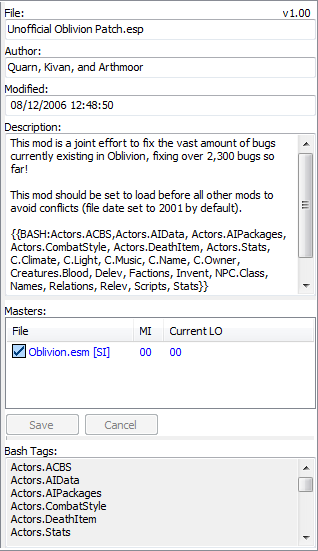
The plugin details panel on the right hand side of the Mods tab.
The plugin details panel contains the following:
Item
Description
File Name
The filename of the selected plugin. Note that changing this does not change the filename in the Masters Lists of any dependent plugins.
Modification Time
For Oblivion, this affects the load order of the selected plugin. For Skyrim, it has no effect, except that if it is changed for a plugin obtained from Steam Workshop, it will cause the plugin to be redownloaded as Steam Workshop uses modification time to detect file versions.
Author
Who made the selected plugin.
Description
Commonly used for a short description of what the selected plugin does, plus the version number and any Bash Tags the author sets.
Masters List
The Masters list show the plugins (.esm or .esp) that the currently selected plugin depends on, the load order
(Mod Index) of that master in the plugin file, and the current load order of the master plugin if present and active.
Plugins' entries in the Masters List may be renamed to reflect name changes of the plugins themselves. To rename a master, first allow editing from the
masters list column context menu and then either left-click the plugin entry and edit it in the column display, or right-click the
plugin and select Change To... then select the replacement plugin. Do not use this to change a plugin's masters to
unrelated plugins, as this will cause file corruption.
If editing is allowed, items that are renamed inside Bash internal dictionaries appear bolded - on clicking on the masterlist they
take their renamed values and the Save and Cancel buttons are enabled. You may click on Save to save the new master list,
or on Cancel to revert displaying the non renamed masters.
Disallowing edits will revert the list to the original and disable Save and Cancel buttons (if no other fields are edited).
MI
Master Index of the mod. This means the actual number of the masters in succession starting with 00 Skyrim.esm, or 00 Oblivion.esm.
Current LO
Current load order in relation to the load order of the Active Plugins. Active Plugins should correspond with plugins.txt.
Bash Tags
This field lists any Bash Tags that are assigned to the selected plugin. Right-clicking will display a list of Bash Tags and allow you to add or remove tags by checking or unchecking them.
Color scheme for Plugin Masters (MI & Current LO)
Checkbox Colour
Meaning
Good. Matches the Master Index of the the Current load order.
Good, but the Master Index is not in sync with the Current load order.
Master Index differs from the Current load order. Masters of this plugin still exist in the Data folder but plugins are out of order compared to the order of its masters when the mod was saved.
If a plugin has two masters that are siblings (one doesn't have the other as a master, so they can load in either order) and they are overriding the same record from an earlier master (e.g. both are overriding a record from the main game master file), then loading them in a different order will result in a different version of the overridden record being the “winner”. But the plugin might depend on the winner being the one indicated by the order in which it references the masters. The plugin should be examined in xEdit (meaning any version) to see if it is best to alter the load order or if Sort Masters should be used to correct the issue.
A Master is missing. If unintended then you should check to make sure that you have not inadvertently renamed or removed the plugin.
CSV Files
Wrye Bash uses CSV files for many of its plugin data related features. CSV files are a very widely supported type of spreadsheet file, and once exported may be edited in programs like Microsoft Excel, LibreOffice Calc or even in text editors such as Notepad or Notepad++.
CSV files are used by the Import/Export... commands as this allows much easier editing of record data in large batches or in systematic manners than in the Construction Set. The data may be exported, edited in the CSV, then imported again. The following notes apply to CSV files.
Wrye Bash will ignore any lines in a CSV file for which the second column does not begin with 0x, so such lines can be used for comments.
For Sigil Stones and Spell Stats CSV exports, additional effects can be added to a stone/spell by appending effects to the end of a line, leaving one blank column between each effect. If any of the Script Effect columns are set to None then all the script effects for that effect will be ignored.
For the values of object stats such as price or weight or damage, etc., formulae may be used to work out the numerical values, but the file should contain the resulting numbers, not the formulae used.
The faction lists for actors do not need to be complete - only the actor/faction pairs added or changed need to be listed. A rank of -1 in a faction will remove an actor from that faction.
Relation lists do not need to be complete for each faction - only the added/changed main/other pairs need to be listed.
CSV files can also be used when building the Bashed Patch, for a number of options. The Bashed Patch builder will automatically detect the presence of any CSV files in the Data\Bash Patches folder and have the correct filename ending. These filename endings are:
Import Type
Required Filename Ending
Replace Form IDs
Formids.csv
Import Factions
Factions.csv
Import Names
Names.csv
Import Relations
Relations.csv
Import Spell Stats
Spells.csv
Import Stats
Stats.csv
Context Menu Commands
The tables below detail the full list of context menu commands available in the Mods tab.
Column Header Context Menu
Command
Description
Load
All
Activates all the plugins in the mod list.
None
Deactivates all the plugins in the mod list.
Save List...
Saves the current load order to a new load list.
Edit Lists...
Allows the deletion and renaming of load lists.
[Load List]
[Load List] is the name of a load list, which are listed below the separator in the Load submenu. Clicking a load list will apply it, deactivating any plugins that are not listed as active in it.
Sort By
This submenu allows you to choose by which column the plugin list is sorted. This is equivalent to clicking on a column header. You can also choose to sort by Type, which will place .esms before .esps regardless of the sorting criteria, or by Selection, which places selected plugins before unselected plugins regardless of criteria.
This submenu allows you to choose which columns are visible in the mod list.
File
New Bashed Patch...
Creates a new Bashed Patch plugin. Useful if you accidentally delete your current one or wish to have more than one.
New Mod...
Creates an empty plugin.
Open...
Opens the Data folder in Windows Explorer.
Unhide...
Opens a dialogue window allowing you to select which hidden plugins to unhide.
List Mods
This outputs a BBCode-formatted load order, including version information, activation status and major load order errors. It can be useful for debugging a broken load order. If the 'c' keyboard key is pressed when this command is selected, the CRCs of plugins will also be displayed in the output.
List Bash Tags
This outputs a BBCode-formatted list of all the Bash Tags applied to the plugins in your load order, and where/how the Bash Tags were specified. It can be useful for debugging a broken load order.
Auto-Ghost
The game engine has a bug where it reads all the plugins in the Data folder, and this can affect performance when the number of plugins is around 300+. Auto-Ghosting adds a .ghost extension to all inactive plugins automatically to prevent the game engine reading them, and so helping to avoid the performance drop. When a ghosted plugin is activated, the .ghost extension is removed, allowing it to function as normal. Note that other utilities will not recognise ghosted plugins, so there are options available for individual plugins to control which get ghosted.
Lock Load Order
Oblivion only. This prevents other utilities from altering plugin modification times. More accurately, it detects changes to modification times when Wrye Bash is focused (ie. on top of all other program windows) and reverses those changes.
Debug Mode
Activates debug output. Only a few commands will display any debug output, but it may be useful for troubleshooting.
TES4Edit Expert
If checked, this option runs TES4Edit with the -IKnowWhatImDoing argument, activating more advanced functionality, whenever TES4Edit is run from its launcher in the status bar.
BOSS's masterlist contains information on dirty plugins that can be used by Wrye Bash to highlight these plugins in the mod list. Checking this setting tells Wrye Bash to use this information if BOSS is installed.
Plugin Context Menu
Command
Description
File
Create Dummy Masters...
Creates an empty plugin for each missing master a mod has. This is useful for allowing TES4Edit to open a 'Filter' patch without having all of the required masters. These dummy plugins can later be removed using the Remove Dummy Masters command.
Backup
Creates a backup of the selected plugin in [Game] Mods\Bash Mod Data\Backups. On first run, the backed-up plugin has f appended to its file extension, giving .espf or .esmf.
Duplicate...
Creates a duplicate of the selected plugin in the Data folder.
Snapshot...
Creates a snapshot copy of the selected plugin in Bash\Snapshots. Snapshot filenames are appended with -n where n is a number between 01 and 99. Eg. the first snapshot of Plugin.esp is Plugin-01.esp. The number is incremented each time the plugin has a snapshot taken. Additionally, if there is a version line in the plugin's description field, then the snapshot number will be appended to the version number in the same manner.
Delete
Permanently deletes the selected plugin, and any backups of it, but not snapshots.
Hide
Moves the selected plugin to the Bash\Hidden subdirectory. If the plugin's group is defined and there is a Bash\Hidden subdirectory of the same name, the plugin will be placed there.
Redate...
Change the modification time of the selected plugin. If more than one plugin is selected, then all the plugins will have their modification times altered, with the first in the list being set to the specified time and the rest at one minute intervals from that time.
Sort
Set the load order of the selected plugins, sorting them alphabetically.
Revert To Backup
Reverts the selected plugin to the last backup made of it.
Revert To First Backup
Reverts the selected plugin to the first backup made of it.
Revert To Snapshot...
Reverts the selected plugin to a selected snapshot.
Groups
Export Group
Exports the selected plugin's groups to a CSV file as plugin name/groups pairs.
Import Group
This will set the groups for selected mods as specified in a csv file (as created by the Export Groups command). If selected mods are not assigned a group in the file nothing happens.
Edit Groups...
Add: add a new group to existing groups. Group names can be in Unicode.
Rename: rename selected group. Mods that belong to it will have the group renamed.
Remove: delete selected group. Deleting a group removes it from mods that belong to it.
Refresh: pick up assigned groups and add them to the existing ones. Use it after importing groups from a file to update available groups.
Sync: sync the list of available groups to the assigned ones - in other words delete unassigned groups.
Default: reset the list of available groups to the default ones. This won't delete non default assigned groups. It's a feature. Use Refresh to pick up your groups and add them to the defaults.
Groups Menu
Set a group for the selected plugin(s) (do not confuse with an Exclusion Group). Groups that are assigned to the selected plugins appear checked. They provide no functionality other than to place hidden plugins in group folders provided those folders already exist. Use them to group plugins together so you can disable or enable them at once, etc. Note to old timers: BALO has been removed taking balo groups for the ride - those of you who remember them shed a tear goodbye.
Rating
A purely cosmetic feature, this allows you to assign different rating values to plugins.
Details...
Displays a list of the records in the selected plugin, similar to the Details view in the Construction Set.
List Masters...
Outputs a list of the selected plugin's masters.
Readme...
Attempts to open the selected plugin's associated readme in the Doc Browser.
List Bash Tags...
Outputs a BBCode-formatted list of all the Bash Tags applied to the selected plugin, and where/how the Bash Tags was specified. It can be useful for debugging a broken load order.
Create BOSS Report...
Outputs the plugin filename, CRC, and ITM/UDR count for easy reporting of the plugin to an official BOSS thread.
Copy Mod Info...
Outputs a report on the selected plugins(s) with the info from the currently displayed columns.
List Dependencies
Displays and copies to the clipboard a list of mods that have the currently selected
mod as master. Active mods are prefixed with their load order while merged, imported and inactive mods are prefixed with
++, ** and __ respectively.
Disallow Ghosting
Displayed if a single plugin is selected. Don't ghost this plugin when it is inactive, even if Auto-Ghost is enabled. Will unghost a ghosted plugin if enabled.
Ghost/Unghost
Displayed if a single plugin is selected. Manually ghost/unghost this plugin (active ones can't be ghosted). Ghosting a plugin will clear its Disallow Ghosting flag if set. Note that, if Auto-Ghost is enabled, manually unghosting a plugin will be reverted on refresh - mark the plugin as disallow ghosting if you want your changes to persist.
Ghost
Displayed if multiple plugins are selected. Ghost selected plugins (no effect on active ones). Unghost all at once is on the todo list, if you wondered.
Ghosting
Allow Ghosting
Displayed if multiple plugins are selected. Unchecks Disallow Ghosting for the selected plugins.
Disallow Ghosting
Displayed if multiple plugins are selected. Checks Disallow Ghosting for the selected plugins.
Invert Ghosting
Displayed if multiple plugins are selected. Toggles the status of Disallow Ghosting for the selected plugins.
Mark Mergeable...
Scans the selected plugin(s) to determine if they are mergeable or not. Wrye Bash does this automatically, but this command reports why mods are unmergeable.
Mark Mergeable (CBash)...
Oblivion only. Does the same thing as Mark Mergeable..., but uses CBash to scan the plugins. A Bashed Patch built using CBash can merge more plugins, so the results between the two Mark Mergeable commands will differ.
Rebuild Patch...
Rebuild the selected Bashed Patch using the Python patcher.
Rebuild Patch (CBash *Beta*)...
Oblivion only. Rebuild the selected Bashed Patch using the CBash patcher.
List Patch Config...
Displays a summary of how the selected Bashed Patch is configured.
Export Patch Config...
Exports the configuration of the selected Bashed Patch to a file.
Export
Cell Block Info...
Oblivion only. Exports a list of cell block Editor IDs and their coordinates in the selected plugin to a CSV file.
Editor Ids...
For advanced mod authors only. Exports the Editor IDs of the records in the selected plugin to a CSV file.
Factions...
For advanced mod authors only. Exports the factions defined for actors in the selected plugin to a CSV file, which can be imported to a plugin or used in the Bashed Patch's Import Factions option.
Names...
Exports the names of the objects in the selected plugin to a CSV file. All the records displayed in the Construction Set's Objects Window are supported - cells and dialogue are not. As well as being useful for the usual large-scale changes, this command is useful for translators. The CSV file can also be used in the Bashed Patch's Import Names option.
NPC Levels...
For advanced mod authors only. Exports NPC level info from the selected plugin to a CSV file. Only NPCs which are dynamically levelled (ie. offset from the player's level) will be exported.
Map Markers...
Oblivion only. Exports information about the map marker data in the plugin.
Prices...
Exports the prices of objects in the selected plugin to a CSV file.
Relations...
For advanced mod authors only. Exports the faction relationships in the selected plugin to a CSV file. This does not export race relationships. The CSV file can also be used in the Bashed Patch's Import Relations option.
Ingredients...
Exports alchemy ingredient record data from the selected plugin to a CSV file.
Scripts...
Exports the scripts in the selected plugin to a series of text files. The scripts may then be edited in the text files and re-imported. Warning: Do not change the first three lines of each text file exported when editing unless you know what you're doing.
Sigil Stones...
Exports the stats of sigil stones from the selected plugin to a CSV file.
Spells...
Exports spell stats in the selected plugin to a CSV file. The CSV file can also be used in the Bashed Patch's Import Stats option. There are two modes of export, Basic and Detailed. The spell stats exported in Basic mode are as follows.
Form ID
Editor ID
Name
Cost
Level type
Spell type
In Detailed mode, all Basic stats are exported as well as a variety of flags and all the spell effects.
Stats...
Exports stats for the following record types in the selected plugin to a CSV file. The CSV file can also be used in the Bashed Patch's Import Stats option.
Ammunition
Apparatus
Armor
Book
Clothing
Ingredient
Key
Light
Misc. Item
Sigil Stone
Soulgem
Weapon
Import
Editor Ids...
For advanced mod authors only. Imports the Editor IDs for records in the selected plugin from a CSV file. As well as updating the Editor IDs of records themselves, this also updates any Editor IDs referenced in normal (non quest stage or dialogue) scripts to reflect the changes. Note: You may have to recompile any altered scripts in the Construction Set.
If you wish to update script references after the Editor IDs were changed, edit the CSV file and add another column after the eid column and give the old Editor IDs in the new column. E.g. MISC Oblivion.esm 0x0123456 newEid oldEid
Factions...
For advanced mod authors only. Applies to the selected plugin the factions defined for actors in a CSV file previously exported using Wrye Bash.
Names...
Imports names for objects from a CSV file into the selected plugin. Only records that already exist in the plugin will have their names changed, no records will be added.
NPC Levels...
For advanced mod authors only. Imports NPC level info from a CSV file into the selected plugin. This does not affect Creature levels or leveled lists, nor does it affect the levels of NPCs in existing saves, for which Update NPC Levels must be used. As well as the format exported by Export NPC Levels, an older format is supported:
The first column is the Form ID. This must not have been edited.
The second column is the Editor ID, which is ignored on import.
The next three columns are the levelling info.
The last four columns are the original NPC levels from the game's master file. If the NPCs are mod-added, these will be blank. These columns are ignored on import.
Map Markers...
Oblivion only. Imports map marker data from a CSV file into the selected plugin.
Prices...
Imports the prices of objects from a CSV file into the selected plugin.
Relations...
For advanced mod authors only. Imports faction relationships from a CSV file into the selected plugin.
Ingredients...
Imports alchemy ingredient record data from a CSV file into the selected plugin.
Scripts...
Imports scripts from a series of text files into the selected plugin. Note: You must recompile any altered or new scripts in the Construction Set.
Sigil Stones...
Imports the stats of sigil stones from a CSV file into the selected plugin.
Spells...
Imports spell stats from a CSV file into the selected plugin. Only records that exist in the plugin will have their spell stats change, no records will be added. The spell stats supported are those exported by Export Spell Stats..., and importing uses the same Basic and Detailed mode distinctions.
Stats...
Imports stats from a CSV file into the selected plugin. Only records that exist in the plugin will have their stats change, no records will be added. The object stats supported are those exported by Export Stats....
For advanced mod authors only. It is useful if you want to replace the records in one master with equivalent records in another master. This command replaces the Form IDs in a plugin according to a CSV file that acts as a Form ID mapper. An example of such a file is Data\Bash Patches\TI to Cobl_Formids.csv. The instructions below detail how to create a Form ID mapper.
Use Export Editor Ids on both the plugin containing the Form IDs to be replaced and the plugin containing the replacement Form IDs.
Combine the two CSV files produced into a CSV file with the following columns:
Record type. This is ignored by Wrye Bash, but can be useful for reference.
Old Mod. This supplies the first two digits in the old Form ID.
Old Object. This supplies the rest of the old Form ID.
Old Eid. The Editor ID for the old object.
New Eid. The Editor ID for the new object.
New Mod This supplies the first two digits in the new Form ID.
New Object. This supplies the rest of the new Form ID.
Note that if either of the new or old sides of a row are empty, the row will be skipped. Also, the new object does not have to be of the same type as the old object, but they should be compatible.
Save the new CSV file so that its filename ends with Formids.csv.
If you've completely swapped from one base plugin to another, you may wish to remove the old dependency. This can be done using TES4Edit's Clean Masters command or TES4Gecko's Edit Master List command. The former only removes totally unused masters while the latter can remove used masters with the appropriate cleanup, and is not an automated procedure.
Note: You can also use TES4Edit to change the Form IDs using its Batch Change Referencing Records command together with the CSV file created. TES4Edit will also change the definition of a Form ID, rather than just any references to it, unlike Wrye Bash.
Mod Cleaning
Don't check against BOSS's dirty mod list
Overrides the setting in the column header context menu for the specific plugin(s) selected.
Scan for Dirty Edits
Oblivion only. Scans the selected plugin for Identical To Master records and deleted references, outputting counts of the dirty edits found. The dirty edit counts may differ from the output provided by TES4Edit as that includes other "junk" records in the ITM count. Wrye Bash does not count these junk records as they are non-harmful.
Scan for UDR
Skyrim only. Behaves as the above Scan for Dirty Edits, but only for deleted references.
Remove World Orphans
Some plugins have a mild form of corruption where exterior cells of new worldspaces in an esp master of the plugin are included in the plugin even if they are not edited, but the parent worldspace is not included, creating "orphaned" cells. This command removes these "orphans".
Nvidia Fog Fix
Systems with Nvidia graphics cards can suffer a black screen bug when interior cell fog distances are set to 0. This command scans the selected plugin(s) and sets any zero-valued fog distances to 0.001. It is advised that mod authors use this on their mods before release.
Undelete Refs
This is an experimental feature for advanced mod authors. If you're trying to undelete references, you should probably use TES4Edit instead. Deleted references can cause crashes. This command undeletes references and disables them instead. However, the undeleted reference does not contain the missing data caused by deletion. TES4Edit can add this data back in.
Add Master...
Add a master to the list of masters for the selected plugin. Warning: For advanced mod authors only. You should only use this if you know exactly what you're doing.
Copy To Esm/Esp
Creates a .esp copy of a .esm or vice versa.
Decompile All
Undoes the effect of a Compile All performed in the Construction Set. It will not do anything to the game's master file.
Esmify/Espify Self
The distinction between esp and esm plugins is not dependent on their file
extensions, but on a bit in the file. This command toggles this bit so that .esp files behave as .esm files and vice versa. It is
useful for creating and editing plugins with .esp files as masters, which cannot be done in the Construction Set otherwise.
Esm files cannot be edited in the Construction Set as esp files, so this command is disabled for them. NB: the file extension won't change
and this is used by Bash so do not mess with it. Warning: Make sure to toggle any plugins back before playing the game, otherwise
savegames will get confused, possibly causing bugs and corruption. To toggle the masters back use the same command on the plugin which
should now be named Espify Self.
Esmify/Espify Masters
This works as Esmify/Espify Self does,
but toggles a plugin's masters rather than the plugin itself. The load order of plugins will change to reflect their new status but
since the modification time won't change they will revert back to their original positions for modification time based load orders.
Be sure to backup your load order for Skyrim.
Version 0.8
Resets the file version number of the selected plugin so that it can be edited in an older version of the Construction Set, which is required when making certain changes due to bugs in the latest Construction Set. Warning: It is possible that this may cause data loss.
Mod's Masters List Column Header Context Menu
Command
Description
Sort By
This submenu allows you to choose by which column the masters list is sorted.
This is equivalent to clicking on a column header.
Allow editing
Allow (or disallow) editing of the masters list.
Enables (or disables) the items' context menu entries.
Clear Renames
Clear internal Bash renames dictionary
Mod's Masters List Items Context Menu
Command
Description
Change To...
Rename a master by selecting the desired replacement esp/esm from the mods directory. It will add the
plugin to the internal renames dictionary of Bash and bold it on any master list that it appears. Hit Save to edit the selected file
permanently. Equivalent to left clicking the selected master for a second time, just allows you to select the mod from the Data
directory instead of entering the name manually.
Note that you should only do this if the new name is a new version of the same mod. Replacing a mod with an unrelated mod will cause
file corruption.
Advanced Bashed Patch
You can have multiple Bashed Patches, though one is generally enough per save profile or character. The only requirement for Wrye Bash recognising a plugin as a Bashed Patch is that its Author field is set to BASHED PATCH, so you can name a Bashed Patch whatever you want.
Viewing & Editing The Bashed Patch
As the Bashed Patch commonly has .esp files as masters, viewing and editing it can be more complicated than for the average plugin. If you wish to view its contents, it is easiest to use TES4Edit, which can also be used to edit most types of data in plugins. To edit it using the Construction Set or Creation Kit (required when editing scripts), you'll need to first use the Esmify Masters command on it. Be sure to use Espify Masters before attempting to play the game.
Bash Tags
Wrye Bash uses a tagging system to determine what mods can and should have which records available for importing into the Bashed Patch. These Bash Tags are specified by mod authors in the header descriptions of their plugins, or are applied using data from three sources:
BOSS's masterlist and userlist files. If BOSS is installed, then Wrye Bash will apply its Bash Tag suggestions. You do not need to use BOSS to benefit from this, it just needs to be installed. REPLACE lines in the userlist will replace Bash Tags suggested in the masterlist, but will not affect Bash Tags specified in plugin description fields.
The Bash Patches\Leveled Lists.csv file. This file contains a small list that is useful if BOSS is not installed.
The Bash Patches\taglist.txt file. This is a stripped-down version of the BOSS masterlist as it was when the version of Wrye Bash installed was released.
Bash Tags may also be set manually, by right-clicking a plugin's Bash Tags field in the Mods Tab sidebar and checking or unchecking tags in the list displayed. If you wish to revert to automatic tagging, choose Automatic in the right-click list. If you are a mod author, you may wish to use Copy to Description for your mod's plugins before releasing it to ensure that users have the tags applied automatically.
Note: A Bash Tag should only be applied when it is important that the plugin's change to whatever the Tag relates to is preserved. If a change your plugin makes is not important to the functioning of your mod, do not add a Bash Tag for it. Doing otherwise negates the purpose of the Bash Tag system.
Bash Tags Available For All Games
Tag
Used When The Mod
Specific Record Types/Changes Supported
Deactivate
Should be deactivated.
N/A
Delev
Deletes entries from Leveled Lists.
Removal of entries from the leveled list entries of Leveled Creature (LVLC) (Oblivion only), Leveled Actor (LVLI) (Skyrim only), Leveled Item (LVLI) or Leveled Spell (LVSP) records.
Filter
Does not require all its masters to be installed to function. See the Merge Filtering section for more information.
N/A
NoMerge
Should not be merged even though it is technically mergeable.
N/A
Relev
Relevels items in Leveled Lists.
Re-levelling of entries from the leveled list entries of Leveled Creature (LVLC) (Oblivion only), Leveled Actor (LVLI) (Skyrim only), Leveled Item (LVLI) or Leveled Spell (LVSP) records.
Bash Tags Available For Oblivion Only
Tag
Used When The Mod
Specific Record Types/Changes Supported
Actors.ACBS
Modifies creature or NPC ACBS configuration.
The following NPC (NPC_) or Creature (CREA) subrecords:
Base spell points
Fatigue
Barter gold
Level
Calc min
Calc max
IsBiped
Sex
IsEssential
IsWeaponAndShield
IsRespawn
IsSwims
IsFlies
IsWalks
IsAutoCalc
IsPCLevelOffset
IsNoLowLevel
IsNoBloodSpray
IsNoBloodDecal
IsNoHead
IsNoRightArm
IsNoLeftArm
IsNoCombatInWater
IsNoShadow
IsNoRumors
IsSummonable
IsNoPersuasion
IsCanCorpseCheck
Actors.AIData
Modifies creature or NPC AI data.
The following NPC (NPC_) or Creature (CREA) subrecords:
Aggression
Confidence
Energy level
Responsibility
Services
Training skill
Training level
Actors.AIPackages
Modifies creature or NPC AI packages list.
Addition or removal of AI Packages in NPC (NPC_) or Creature (CREA) records.
Actors.AIPackagesForceAdd
Adds to creature or NPC AI package list. This tag forces the addition of packages even if they are removed by later-loading plugins tagged with Actors.AIPackages.
Addition of AI Packages in NPC (NPC_) or Creature (CREA) records.
Actors.Animations
Modifies creature or NPC special animations lists.
The Animations (KFFZ) subrecord in NPC (NPC_) or Creature (CREA) records.
Actors.CombatStyle
Modifies creature or NPC assigned combat styles.
The Combat Style (ZNAM) subrecord in NPC (NPC_) or Creature (CREA) records.
Actors.DeathItem
Modifies creature or NPC death items.
The Death Items (INAM) subrecord in NPC (NPC_) or Creature (CREA) records.
Actors.Skeleton
Modifies creature or NPC skeletons.
The following NPC (NPC_) or Creature (CREA) subrecords:
Model path (MODL)
Bound radius (MODB)
MODT
Actors.Spells
Modifies creature or NPC spell lists.
Addition or removal of spells in NPC (NPC_) or Creature (CREA) records.
Actors.SpellsForceAdd
Modifies creature or NPC spell lists. This tag forces the addition of spells even if they are removed by other plugins tagged with Actors.Spells.
Addition of spells in NPC (NPC_) or Creature (CREA) records.
Actors.Stats
Modifies creature or NPC stats.
The following NPC (NPC_) or Creature (CREA) subrecords:
Armorer
Athletics
Blade
Block
Blunt
Hand to Hand
Heavy Armor
Alchemy
Alteration
Conjuration
Destruction
Illusion
Mysticism
Restoration
Acrobatics
Light Armor
Marksman
Mercantile
Security
Sneak
Speechcraft
Health
Strength
Intelligence
Willpower
Agility
Speed
Endurance
Personality
Luck
Body-F
Modifies female body mesh/texture definitions.
The following Race (RACE) subrecords:
Female tail model path
Female tail model bound radius
Female tail MODT
Female upper body texture path
Female lower body texture path
Female hand texture path
Female foot texture path
Female tail texture path
Body-M
Modifies male body mesh/texture definitions.
The following Race (RACE) subrecords:
Male tail model path
Male tail model bound radius
Male tail MODT
Male upper body texture path
Male lower body texture path
Male hand texture path
Male foot texture path
Male tail texture path
Body-Size-F
Modifies female body weight/height definitions.
The following Race (RACE) subrecords:
Female height
Female weight
Body-Size-M
Modifies male body weight/height definitions.
The following Race (RACE) subrecords:
Male height
Male weight
C.Climate
Modifies cell climates.
The following Cell (CELL) subrecords:
Climate (XCCM)
IsBehaveLikeExterior flag
C.Light
Modifies cell lighting or fog.
The following Cell (CELL) subrecords:
Lighting Ambient Color
Lighting Directional Color
Lighting Fog Color
C.Music
Modifies cell music type.
The Music (XCMT) subrecord in Cell (CELL) records.
C.Name
Modifies cell names.
The Name (FULL) subrecord in Cell (CELL) records.
C.Owner
Modifies cell ownership.
The following Cell (CELL) subrecords:
Owner (XOWN)
Rank (XRNK)
Gobal variable (XGLB)
IsPublicPlace flag
C.RecordFlags
Modifies the off-limits or dangerous flags.
Any Cell (CELL) record flags not covered by the other Cell-related Bash Tags.
C.Water
Modifies cell water type or level.
The following Cell (CELL) subrecords:
Water (XCWT)
Water height (XCLW)
IsHasWater flag
Creatures.Blood
Modifies the creature blood subrecords.
The following Creature (CREA) subrecords:
Blood spray (NAM0)
Blood decal (NAM1)
Eyes
Adds eyes to races.
The Eyes (ENAM) subrecord of Race (RACE) records.
Factions
Changes creature or NPC factions.
Addition or removal of a faction, or change of faction rank in NPC (NPC_) or Creature (CREA) records.
Graphics
Is a graphics replacer.
The following subrecords:
Birthsign: Icon path (ICON)
Load Screen: Icon path (ICON)
Class: Icon path (ICON)
Landscape Texture: Icon path (ICON)
Region: Icon path (ICON)
Activator: Model path (MODL), bound radius (MODB) or MODT.
Door: Model path (MODL), bound radius (MODB) or MODT.
Flora: Model path (MODL), bound radius (MODB) or MODT.
Furniture: Model path (MODL), bound radius (MODB) or MODT.
Grass: Model path (MODL), bound radius (MODB) or MODT.
Static: Model path (MODL), bound radius (MODB) or MODT.
Potion: Icon path (ICON), model path (MODL), bound radius (MODB) or MODT.
Ammunition: Icon path (ICON), model path (MODL), bound radius (MODB) or MODT.
Alchemical Apparatus: Icon path (ICON), model path (MODL), bound radius (MODB) or MODT.
Book: Icon path (ICON), model path (MODL), bound radius (MODB) or MODT.
Ingredient: Icon path (ICON), model path (MODL), bound radius (MODB) or MODT.
Key: Icon path (ICON), model path (MODL), bound radius (MODB) or MODT.
Light Icon path (ICON), model path (MODL), bound radius (MODB) or MODT.
Misc. Item: Icon path (ICON), model path (MODL), bound radius (MODB) or MODT.
Sigil Stone: Icon path (ICON), model path (MODL), bound radius (MODB) or MODT.
Soul Gem: Icon path (ICON), model path (MODL), bound radius (MODB) or MODT.
Weapon: Icon path (ICON), model path (MODL), bound radius (MODB) or MODT.
Tree: Icon path (ICON), model path (MODL), bound radius (MODB) or MODT.
Armor: Male biped model path (MODL), male biped model bound radius (MODB), male world model path (MOD2), male world model bound radius (MO2B), male icon path (ICON), female biped model path (MOD3), female biped model bound radius (MO3B), female world model path (MOD4), female world model bound radius (MO4B), female icon path (ICO2), flags or MODT.
Clothing: Male biped model path (MODL), male biped model bound radius (MODB), male world model path (MOD2), male world model bound radius (MO2B), male icon path (ICON), female biped model path (MOD3), female biped model bound radius (MO3B), female world model path (MOD4), female world model bound radius (MO4B), female icon path (ICO2), flags or MODT.
Creature: Models (NIFZ) or NIFT.
Magic Effect: Icon path (ICON), model path (MODL), bound radius (MODB) or MODT.
Effect Shader: Almost anything.
Hair
Adds hairs to races.
The Hairs (HNAM) subrecord of Race (RACE) records.
IIM
Is to be used in Item Interchange Mode. See the Item Interchange Mode section for more information.
N/A
Invent
Changes inventories.
Addition, removal or change in count/number of an item in NPC (NPC_), Creature (CREA) or Container (CONT) records.
InventOnly
Deprecated. Use Invent in conjunction with IIM instead.
N/A
Merge
Obsolete. This tag is ignored.
N/A
MustBeActiveIfImported
Must be active to function correctly even if it is imported into the Bashed Patch.
N/A
Names
Changes the names of things.
The Name (FULL) subrecord in the following record types:
Class
Faction
Hair
Eyes
Race
Magic Effect
Enchantment
Spell
Birthsign
Activator
Alchemical Apparatus
Armor
Book
Clothing
Container
Door
Ingredient
Light
Misc. Item
Flora
Furniture
Weapon
Ammunition
NPC
Creature
Soul Gem
Key
Potion
Sigil Stone
World
Cell
Dialogue
Quest
NpcFaces
Modifies NPC faces.
The following NPC (NPC_) subrecords:
FaceGen Geometry-Symmetric (FGGS)
FaceGen Geometry-Asymmetric (FGGA)
FaceGen Texture-Symmetry (FGTS)
Eyes (ENAM)
Hair (HNAM)
Hair length (LNAM)
Hair colour (HCLR)
FNAM
NpcFacesForceFullImport
Modifies NPC faces, and you wish to import the unmodified subrecords as well as the modified subrecords.
See NpcFaces for the list of supported subrecords.
NPC.Class
Changes the classes of NPCs.
The Class (CNAM) subrecord of NPC (NPC_) records.
Npc.EyesOnly
Modifies NPC eyes.
The Eyes (ENAM) subrecord of NPC (NPC_) records.
Npc.HairOnly
Modifies NPC hair.
The Hair (HNAM) subrecord of NPC (NPC_) records.
NPC.Race
Modifies NPC races.
The Race (RNAM) subrecord of NPC (NPC_) records.
Relations
Changes faction relationships.
The relations of Faction (FACT) records.
Roads
Modifies road records.
The Road (ROAD) subrecord of Worldspace (WRLD) records.
R.AddSpells
Adds spells to racial spell list(s). Either R.ChangeSpells or R.AddSpells should be used for a plugin, not both.
Additions to the spell list of Race (RACE) records.
R.Attributes-F
Modifies racial attributes for females.
The following Race (RACE) subrecords (ATTR):
Female strength
Female intelligence
Female willpower
Female agility
Female speed
Female endurance
Female personality
Female luck
R.Attributes-M
Modifies racial attributes for males.
The following Race (RACE) subrecords (ATTR):
Male strength
Male intelligence
Male willpower
Male agility
Male speed
Male endurance
Male personality
Male luck
R.ChangeSpells
Modifies racial spell list(s) (beyond adding spells). Either R.ChangeSpells or R.AddSpells should be used for a plugin, not both.
Additions or removals to the spell list (SPLO) of Race (RACE) records.
R.Description
Modifies race descriptions.
The Description (DESC) subrecord of Race (RACE) records.
R.Ears
Modifies race ears.
The following Race (RACE) subrecords:
Ear (Male) model path
Ear (Male) model bound radius
Ear (Male) MODT
Ear (Male) icon path
Ear (Female) model path
Ear (Female) model bound radius
Ear (Female) MODT
Ear (Female) icon path
R.Head
Modifies race heads.
The following Race (RACE) subrecords:
Head model path
Head model bound radius
Head icon path
FaceGen Geometry-Symmetric (FGGS)
FaceGen Geometry-Asymmetric (FGGA)
FaceGen Texture-Symmetry (FGTS)
R.Mouth
Modifies race mouths.
The following Race (RACE) subrecords:
Mouth model path
Mouth model bound radius
Mouth MODT
Mouth icon path
Tongue model path
Tongue model bound radius
Tongue MODT
Tongue icon path
R.Relations
Modifies race relationships.
The faction list (XNAM) of Race (RACE) records.
R.Skills
Modifies race skill bonuses.
The skill boosts (DATA) of Race (RACE) records.
R.Teeth
Modifies race upper or lower teeth.
The following Race (RACE) subrecords:
Teeth (Lower) model path
Teeth (Lower) model bound radius
Teeth (Lower) MODT
Teeth (Lower) icon path
Teeth (Upper) model path
Teeth (Upper) model bound radius
Teeth (Upper) MODT
Teeth (Upper) icon path
ScriptContents
Should not be used. Can cause serious issues.
N/A
Scripts
Modifies item, NPC or object scripts.
The Script (SCRI) subrecord in the following record types:
Activator
Potion
Alchemical Apparatus
Armor
Bool
Clothing
Container
Creature
Door
Flora
Furniture
Ingredient
Key
Light
Leveled Creature
Misc
NPC
Quest
Sigil Stone
Soul Gem
Weapon
Sound
Replaces sounds.
The following subrecords:
Activator: sound (SNAM)
Container: open sound (SNAM), close sound (QNAM).
Creature: foot weight (WNAM), inherits sounds from (CSCR), other sounds.
Door: open sound (SNAM), close sound (ANAM), loop sound (BNAM).
Merge filtering is an advanced option that allows records in a merged mod to be selectively filtered according to the current load order. For example, a patch mod could be created to rebalance weapons from several different weapon-adding mods. This feature would allow the patch to be used even if you didn't use all the mods, and the Bashed Patch would just apply the bits for the mods you do use. This saves the need for a separate patch plugin for each mod.
Merge filtering has requisite conditions that must be fulfilled for a plugin to take advantage of it, and some limitations. These conditions and limitations are:
The plugin must be mergeable and tagged with Filter.
The plugin must not be active at the time the patch is built. Note that if the user doesn't have all the plugin's masters installed, it will have to remain deactivated at all times.
Filtering is done according to the currently active plugins: it is therefore very important that all the desired plugins are active when the Bashed Patch is built.
Filtering is mostly limited to the top level, ie. if the plugin a record is from is missing, the record will be skipped. However, if a record references another record, and the latter's plugin is missing, the former will not be skipped, and the Bashed Patch will end up dependent on the latter's plugin being installed.
There are a few exceptions to the above limitation: entries in leveled lists will be filtered, as will spells, factions and items referenced in Creature and NPC records.
Item Interchange Mode
Item Interchange Mode is a 'hack' (a horribly inelegant and inconsistent implementation of a feature that nonetheless works) to support Vacuity's Item Interchange mod.
Activation of the mode for a plugin relies on the following conditions:
The plugin is tagged with IIM.
The plugin is being merged into the Bashed Patch.
The plugin is tagged with Filter.
Item Interchange Mode has the following effects:
Prevents the records in the plugin from being merged into the Bashed Patch, apart from leveled list records, which are merged in.
Prevents all the patch components except from the Leveled Lists and Import Inventory from even looking at the plugin.
Causes Import Inventory to ignore all changes in the plugin except inventory changes.
Tweak Options In Detail
Each Tweak... section has a table below that details the options found within it.
Race Tweaks
Tweak
Description
Bigger Nords and Orcs
Adjusts the Orc and Nord race records (including mod added races named Orc/Nord) to be taller/heavier - to be more lore friendly. Three choices available - MMM settings, RBP settings or standalone Bigger Nords and Orcs settings.
Merge Eyes From Similar Races
Merges eye lists from similar races ie RBP Khajiit eyes to Elsweyr Khajiits etc.
Merge Hairs From Similar Races
Merges hair lists from similar races ie RBP Khajiit hair to Elsweyr Khajiits etc.
Playable Eyes
Sets all eyes to be playable.
Playable Hairs
Sets all hairs to be playable.
Races Have All Eyes
Gives all races all eyes - although Googly Eye scanning/removal takes place after this so the final patch will not have all eyes for all races.
Races Have All Hairs
Gives all races all hairs.
Sexless Hairs
Sets all hairs to be useable by both male and female characters.
Tweak Actors
Tweak
Description
As Intended: Boars
Adds the Bethesda Boar Resistances spells to all boars (found by the UOP team, based off of a mod made by Tejon).
As Intended: Imps
Adds the Bethesda Imp Resistances spells to imps (found by the UOP team, based off of a mod made by Tejon). May choose to apply to all imps, only full size imps, or only implings.
Irresponsible Creatures
Sets responsibility to 0 for all/specified creatures - so they can't report you for crimes.
Mayu's Animation Overhaul Skeleton Tweaker
Sets NPC skeletons paths to match that required for MAO to work. Requires Mayu's Animation Overhaul or it will almost certainly cause CTDs.
No Bloody Creatures
Nulls the blood records of all creatures; acts like 'Mart's Monster Mod - No Blood.esp' except it is universal and doesn't work with MMM (MMM uses a different system - it won't cause any harm if used with MMM, it will just have pretty much no effect).
Quiet Feet
Removes all/some 'foot' sounds from creatures; on some computers can have a significant performance boost.
Real Walk for female NPCs
Changes all female NPCs to use Mur Zuk's Real Walk. Requires Mur Zuk's Real Walk animation file.
Redguard FGTS Nuller
Sets Redguard NPC FGTS subrecords to null; for use with Better Redguards.
Sexy Walk for female NPCs
Changes all female NPCs to use Mur Zuk's Sexy Walk. Requires Mur Zuk's Sexy Walk animation file.
VadersApp's Oblivion Real Bodies Skeleton Tweaker
Changes all (modded and vanilla) NPCs to use diverse skeletons for different look. Not compatible with MAO. Requires VadersApp's Oblivion Real Bodies.
Vanilla Beast Skeleton Tweaker
Sets any NPCs using the vanilla non-beast skeleton path (skeleton.nif) to use the beast skeleton patch (skeletonbeast.nif). This avoids bugs when a mod changes the race of an NPC to a beast race without setting the skeleton path to the beast path, in which case the tail will appear to extend forever and weird stuff like that.
Tweak Assorted
Tweak
Description
All Armor Playable
Modifies non-playable armors to make them playable, unless the armor satisfies one of the following conditions:
It is unnamed.
It is scripted.
It contains no body flags set other than right ring.
It contains any of the following (case-insensitive) words:
"mark"
"token"
"willful"
"see" and "me"
"werewolf"
"no wings"
"tsaesci tail"
"widget"
All Clothing Playable
Modifies non-playable clothes to make them playable, unless the clothing satisfies one of the following conditions:
It is unnamed.
It is scripted.
It contains no body flags set other than right ring.
It contains any of the following (case-insensitive) words:
"mark"
"token"
"willful"
"see" and "me"
"werewolf"
"no wings"
"tsaesci tail"
"widget"
Armor Shows Amulets
Modifies playable armor to show amulets.
Armor Shows Rings
Modifies playable armor to show rings.
Bow Reach Fix
Some of the bows in Oblivion (and a few in user mods) have a reach of zero. Due to a bug in the Oblivion engine, if these bows are equipped by an NPC, the game will crash. This patch changes bows with zero reach to have reach of 1.
Clothing Shows Amulets
Modifies playable clothing to show amulets.
Clothing Shows Rings
Modifies playable clothing to show rings.
DarNified Books
Tweaks book colours and fonts for use with DarNified UI.
Default Icons
Sets a default icon for any records that don't have any icon assigned.
Disable Wind
Sets wind speed for all weathers to 0; this means that bushes and trees don't move in the wind since there isn't any. May help on machines with low end graphic cards.
Faction Crime Gold Multplier Fix
Fix factions with unset crimeGoldMultiplier to have a crimeGoldMultiplier of 1.0.
Harvest Chance
Sets the harvest chance of all flora to the desired chance.
Magic: Script Effect Silencer
Script Effects will be silenced and have no graphics.
No Light Fade Value Fix
Sets the fade values on all lights to a default of 1.0 if not already set.
No Light Flicker
Turns off flickering effects for lights. May help on machines with low end graphic cards.
Number of uses for pre-enchanted weapons and Staffs/Staves
The charge amount and cast cost will be edited so that all enchanted weapons and staffs have the amount of uses specified. Cost will be rounded up to 1 (unless set to unlimited) so number of uses may not exactly match for all weapons.
Nvidia Fog Fix
Ensures that cells have at least one non-zero fog value. For avoiding the Nvidia fog-related black screen. This feature is based on Quarn's Nvidia Black Screen Fix.
Reweigh: Arrows
Reweighs arrows to a maximum weight.
Reweigh: Ingredients
Reweighs ingredients to a maximum weight.
Reweigh: Potions (Maximum)
Reweighs potions to a maximum weight. This does not affect potions with script effects or with current weight >= 1.0. Thus it should not affect alcoholic beverages or scripted "potions" like HTS water skins. Note that this is similar to, but not the same as, the Reweigh Potions command for savegames, which reweighs user created potions rather than mod created potions.
Reweigh: Potions (Minimum)
Reweighs potions to a minimum weight.
Reweigh: Staffs/Staves
Reweighs staves to a maximum weight.
Right Hand Rings
Makes rings behave more consistently by making all rings prefer to be on the right hand. With this tweak activated, rings will only equip to the left hand if the right hand has a ring, but the left hand does not. You can use this to make one ring permanently equipped - just equip it to the left hand and it will stay on until you specifically unequip it.
Set Sound Attenuation Levels
The sound attenuation levels will be set to tweak%*current level, thereby increasing (or decreasing) the sound volume (lower attenuation = higher volume).
Set Sound Attenuation Levels: Nirnroots Only
The sound attenuation levels will be set to tweak%*current level, thereby increasing (or decreasing) the sound volume (lower attenuation = higher volume). This one only affects Nirnroots.
Skyrim-style Weapons
Sets all one handed weapons as blades, two handed weapons as blunt.
Uniform Groundcover
Eliminates the random variation in groundcover (grass, vines, shrubs, etc). Tall groundcover will still be taller than short groundcover, but there will be less variation in size. May help on lower end machines.
Tweak Clothes
Tweak
Description
Gloves Show Rings
Prevents gloves from hiding rings.
Max Weight Amulets
Sets the maximum weight of amulets in the game. Amulets with higher weights will have their weight set to this value.
Max Weight Hoods
Sets the maximum weight of hoods in the game. Hoods with higher weights will have their weight set to this value.
Max Weight Rings
Sets the maximum weight of rings in the game. Rings with higher weights will have their weight set to this value.
Robes Show Amulets
Forces all robes to show amulets.
Robes Show Pants
Allows you to wear pants/skirts/greaves with robes. This is useful for armor and enchantment. Not recommended because graphics clipping is common.
Unlimited Amulets
Allows you to wear an unlimited number of amulets. Not recommended because it is unbalancing and it prevents amulets from displaying (i.e., they won't appear around your or NPC's necks).
Unlimited Rings
Allows you to wear an unlimited number of rings. Not recommended because it is unbalancing and it prevents rings from displaying (i.e., they won't appear on your or NPC's fingers).
Tweak Names
Tweak
Description
Body Part Codes
This determines what code will be used for tweaking armor and clothes covering various body parts. There are two versions. Each code letter is assigned in order to: Amulets, Rings, Gloves, Helmets, Tail items, Robes (upper+lower body), Chest, Pants/Greaves, Boots/Shoes, Shields.
Armor
Tweaks names of armors to make them sort more easily in inventory. There is a choice of formats and whether you want armor rating to be shown.
Clothes
Tweaks names of clothes to make them sort more easily in inventory. There is a choice of formats.
Lore Friendly Names: Dwarven -> Dwemer
Changes nearly any usage of the word Dwarven to use Dwemer instead in order to better follow lore.
Notes and Scrolls
Tweaks names of notes and scrolls to make them sort more easily in inventory. There is a choice of formats and whether you want enchanted scrolls at top (~) or the bottom (.) of list. (Note that the "~" will not display in the inventory.)
Potions
Tweaks names of potions to make them sort more easily in inventory. There is a choice of formats.
Proper English Names: Dwarfs -> Dwarves
Renames any instances of dwarfs to dwarves
Proper English Names: Staffs -> Staves
Renames any instances of staffs to staves.
Spells
There is a choice of formats and whether you wish the school (e.g. D) and spell level (e.g. D2) to show.
Weapons
There is a choice of formats and whether you want damage to be shown.
Tweak Settings
Tweak
Description
Actor Strength Encumbrance Multiplier
Actor strength * this multiplier = actor encumbrance capacity.
AI: Conversation Chance
Chance of NPCs engaging each other or the player in conversation in exteriors.
AI: Conversation Chance - Interior
Chance of NPCs engaging each other or the player in conversation in interiors.
AI: Max Active Actors
The maximum number of actors for AI to be processing at once. Must be higher than Combat: Max Actors.
AI: Max Dead Actors
The maximum number of dead actors allowed before Oblivion begins to remove them.
AI: Max Smile Distance
Maximum distance for NPCs to start smiling.
Arrow: Litter Count
Shot arrows will be automatically removed from the world if their number exceeds the Arrow Litter Count.
Arrow: Litter Time
The period of time after which shot arrows will be automatically removed from the world.
Arrow: Recovery from Actor
Your chance of recovering an arrow shot into an actor (including arrows shot into player).
Arrow: Speed
Speed at which a full power arrow travels.
Bounty: Attack
The bounty for attacking a "good" npc when observed.
Bounty: Horse Theft
The bounty for horse stealing.
Bounty: Theft
The bounty for stealing as a fraction of the item's value.
Camera: Chase Distance
Changes the maximum distance the chase camera can be moved away from the player. Very useful for creating a bird's eye view – but also a little bit unbalancing for that reason.
Camera: Chase Tightness
Tightens up the 3rd person chase camera. Highest setting (x 3.0) essentially locks camera behind player.
Camera: PC Death Time
This is how long the camera lingers on the player after player's death before the reload menu appears. (Even at "Unlimited", you can hit escape to force reload menu to appear.)
Cell Respawn Time
Time that must pass after you've last visited a cell before the creatures, npcs and items in it respawn. Default is 3 days. Note that setting to longer durations will result in larger savegames.
Combat: Alchemy
By default, you cannot craft alchemy items in combat. Disallowing it encourages you to be ready for battle ahead of time.
Combat: Max Actors
The maximum number of actors that the engine will process in combat.
Combat: Max Ally Hits
The maximum number of hits on an ally allowed in combat before the ally will attack the hitting character.
Combat: Maximum Armor Rating
The maximum armor rating that you can get. Default: 85.
Combat: Recharge Weapons
By default, you can recharge weapons during combat. Disallowing that encourages you to be ready for battle ahead of time.
Combat: Repair
By default, you cannot repair items in combat. Disallowing it encourages you to be ready for battle ahead of time.
Companions: Max Number
Sets the maximum number of companions that will follow the player.
Compass: Disable
Disables POI's (Points of Interest), Quest Markers, or both on the compass. This may not work with some UI mods, and make some quests very hard to complete.
Compass: POI Recognition
Distance at which Points of Interest become visible on the compass. Default is 12,000 units. Lowest setting (x 0.25) is just a little farther than unvisited locations will be "found."
Cost Multiplier: Enchantment
The cost multiplier factor for enchanting, OOO default: 120, vanilla default: 10.
Cost Multiplier: Recharge
The cost multiplier factor for recharging.
Cost Multiplier: Repair
The cost multiplier factor for repairing.
Cost Multiplier: Spell Making
The cost multiplier factor for spellmaking.
Crime: Alarm Distance
The distance from the player that NPCs will be alerted to crimes.
Crime: Pickpocketing Fine
The fine for pickpocketing.
Crime: Trespass Fine
The fine for trespassing.
Drag: Max Moveable Weight
The max weight that can be dragged.
Essential NPC Unconsciousness
Time for which an essential NPC stays unconscious after being knocked out.
Fatigue from Running/Encumbrance
Fatigue cost multiplier for running or encumbrance.
Greeting Distance
Distance at which NPCs will greet the player.
Horse Turning Speed
Default Horse turning speed is rather slow. This allows you to increase it by 1.5 or 2.0 times normal speed.
Inventory Quantity Prompt
Number of items in a stack at which point Oblivion prompts for a quantity.
Jump Higher
Increases the maximum allowed jump height. Note that this may allow you to jump over city walls and so end up with graphical strangeness.
Leveled Creature Max Level Difference
Maximum difference to player level for leveled creature.
Leveled Item Max Level Difference
Maximum difference to player level for leveled items.
Magic: Bolt Speed
Speed at which at which magic bolts (projectiles) travel.
Magic: Chameleon Refraction
Turns off the refraction effect for chameleon, but leaves the incremental transparency effect on.
Magic: Max NPC Summons
Sets the number of summons a NPC may have active at one time.
Magic: Max Player Summons
Sets the number of summons the player may have active at one time. Normally less than Max NPC Summons.
Master of Mercantile Extra Gold Amount
The extra barter gold all vendor's have for a master of mercantile.
Msg: Auto Saving
Sets the message on autosaving to blank or either "." or "Hmm..." or a custom value entered by user.
Msg: Equip Misc. Item
Sets the message on equipping a misc item to blank or either "." or "Hmm..." or a custom value entered by user.
Msg: Harvest Failure
Sets the message on flora harvest failure to blank or either "." or "Hmm..." or a custom value entered by user.
Msg: Harvest Success
Sets the message on flora harvest success to blank or either "." or "Hmm..." or a custom value entered by user.
Msg: Horse Stabled
Sets the message on stabling a horse on fast travel to blank or either "." or "Hmm..." or a custom value entered by user.
Msg: Loading Area
Sets the message when background loading area to blank or either "." or "Hmm..." or a custom value entered by user.
Msg: No Fast Travel
Sets the message when attempting to fast travel when it is prohibited to blank or either "." or "Hmm..." or a custom value entered by user.
Msg: Not Enough Charge
Sets the message on attempting to use an enchanted item with insufficient charge to blank or either "." or "Hmm..." or a custom value entered by user.
Msg: Quick Load
Sets the message on quick loading to blank or either "." or "Hmm..." or a custom value entered by user.
Msg: Quick Save
Sets the message on quick saving to blank or either "." or "Hmm..." or a custom value entered by user.
NPC Blood
Sets a few gmsts to use either user specified blood textures or no blood.
Training Max
Sets the training limit per level allowed by trainers.
UOP Vampire Aging and Face Fix.esp
Duplicate of the UOP component that disables vampire aging (fixes a bug). Use instead of 'UOP Vampire Aging & Face Fix.esp' to save an esp slot.
Warning: Exterior Distance to Hostiles
Sets the minimum distance a hostile actor has to be from the player to allow the player to sleep/fast travel/etc. in exteriors.
Warning: Interior Distance To Hostiles
Sets the minimum distance a hostile actor has to be from the player to allow the player to sleep/fast travel/etc. in interiors.
Crime: Force Jail
The bounty level at which the player cannot pay the fine but has to go to jail.
Thieves Guild: Quest Attacking Penalty
Sets the penalty cost for attacking while completing a Thieves Guild quest.
Thieves Guild: Quest Killing Penalty
Sets the penalty cost for killing while completing a Thieves Guild quest.
Thieves Guild: Quest Stealing Penalty
Sets the penalty cost for stealing while completing a Thieves Guild quest.
Timescale
Sets the game's timescale.
Default CSV Files
The following CSV files are supplied with Wrye Bash and are can be used when building your Bashed Patch.
Default CSV Files
CSV File
Description
Replace Form IDs
P1DCandles_Formids
Replaces the Form IDs of various candles to reference equivalents supplied by P1D's Candles For Kleptos.
TI to Cobl_Formids
Replaces ingredients added by Tamrielic Ingredients with equivalents added by Cobl.
Import Names
Guard_Names
Based on Flak's Complete Names Project, this CSV file gives unique names to guards, legion soldiers, couriers and a few other NPCs and creatures with generic names. It covers both vanilla Oblivion and Oscuro's Oblivion Overhaul.
OOO_Potion_Names
Renames the alcoholic beverages back to vanilla names for those that don't like OOO's method of renaming them.
Random_NPC_Alternate_Names
Does the same as Random NPC Names above, but using different names.
Random_NPC_Names
Gives unique names to generically named NPCs and renames some others from the following mods:
Crowded Roads Revamped by Spotty42
Crowded Roads Revisited by Smooth
Tamriel Travellers by Gratis_monsta
Crowded Cities 15/30 by Gratis_monsta
PT_RoamingNPCs by Gratis_monsta
Rational_Names
Renames various items in the game to have more rational names. Based on Rational Names 2, minus the GMST settings for soulgem names, and expanded to cover the Shivering Isles, Oscuro's Oblivion Overhaul and a few more mods.
Cobl Exhaustion
Assorted_Exhaust
Defines power exhaustion levels for greater powers from Oblivion, the Orrery DLC and Cobl.
Kmacg94_Exhaust
Defines power exhaustion levels for greater powers from Race Balancing Project, Oblivion WarCry, Oscuro's Oblivion Overhaul and several other mods.
Morph Factions
Bash_MFact
Used with Wrye Morph to provide faction morphing.
Leveled Lists
The leveled list patcher is slightly odd in comparison to the others: it's effectively an Import... patcher, but its options are decided automatically by default.
First, a bit of background. When different plugins alter the same leveled list, only the last loaded plugin's changes get applied. This tends not to be what is wanted. The leveled list patcher circumvents the issue by instead merging all the changes made to leveled lists and having this merged set of changes applied.
The leveled list merging is dictated by related Bash Tags, and functions as follows.
The load order of plugins is still important to the result of the leveled list patcher. It decides what plugins' effects override others.
Untagged plugins can only add new entries to leveled lists. If such a plugin adds an entry that already exists, it will be ignored. Furthermore, even if another plugin has already marked that entry as removed, it will not be re-added.
Delev tagged plugins can remove entries from leveled lists. Any items present in such a plugin's masters but not in the plugin itself will be removed.
Relev tagged plugins can relevel an existing entry (ie. change its levels and/or counts in the list), and can also override previous deletions of entries from leveled lists. However, it does not prevent a later-loading Delev tagged plugin from then removing an entry again.
Delev and Relev tagged mods simply combines the effects of the Delev and Relev Bash Tags.
In addition to the above, the leveled list patcher removes any empty sublists from leveled lists, as these would otherwise cause the leveled list to select nothing if such a sublist was picked in-game.
It's best to simply ensure that your plugins have the correct tags and leave this section on automatic. To add plugins to or remove plugins from the list, uncheck the Automatic checkbox, and use the Add or Remove buttons. The latter will remove the currently selected plugin.
To manually override the Delev/Relev Bash Tags for a plugin, right-click it in the section list and check or uncheck the relevant options as desired. To return to the automatic setting, select the Auto option in the right-click menu.
Saves Tab
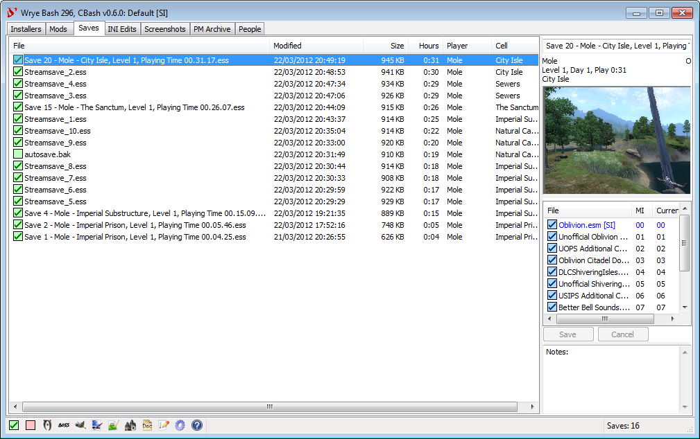
Wrye Bash's Saves tab.
Overview
The Saves tab allows you to manage many aspects related to your game's saves. Save files are found in the My Games\[Game]\Saves directory and have the file extension .ess. When you quicksave or autosave, the game backs up the previous quick/autosave by replacing the file extension with .bak. This backup may be restored by restoring its original file extension.
If you have Pluggy and/or the game's Script Extender installed, each of your save files will have a corresponding cosave containing the Pluggy/OBSE/SKSE-specific data. These cosaves have file extensions .pluggy, .obse, .skse for Pluggy, OBSE and SKSE respectively.
The Saves tab is divided into two sections: the main panel lists your save files and displays some of their details in its columns. The Save Details panel on the right displays some more information relating to the currently selected save file. It comprises of the following sections:
Section
Description
File Name
This is the filename of the save. Changing it here will rename the save file.
Player Info
These three lines give the player character's name, their level, days have passed in-game, hours played and current location.
O/P Flags
These two flags appear to the right of the player info, and indicate the presence of cosave files: O is for OBSE cosaves, and P is for Pluggy cosaves.
Screenshot
The screenshot embedded in the save file, taken at the moment of saving.
Masters List
The Masters list show the plugins (.esm or .esp) that the currently selected save file depends on, the load order
(Mod Index) of that master in the save file, and the current load order of the master plugin if present and active.
Masters in the list can be renamed if the corresponding plugin has been renamed. To rename a master, first allow editing from the
masters list column context menu and then either left-click it and edit it in the column display, or right-click it and select Change To... to select the desired
replacement plugin from the Data directory. Note that you should only do this if the new name is a new version of the same mod.
Replacing a mod with an unrelated mod will cause file corruption.
If editing is allowed, items that are renamed inside Bash internal dictionaries appear bolded - on clicking on the masterlist they
take their renamed values and the Save and Cancel buttons are enabled. You may click on Save to save the new master list,
or on Cancel to revert displaying the non renamed masters.
Disallowing edits will revert the list to the original and disable Save and Cancel buttons (if no other fields are edited).
Note that currently renaming the master in the OBSE/SKSE cosave is NOT supported (except for very old OBSE versions). If the
save has a cosave this will most probably corrupt the cosave.
See the related issue (help wanted).
Masters can also be disabled (again if editing is allowed) if they have been removed and are preventing your save from loading, as may sometimes happen,
by right-clicking them and selecting Disable. Note that logical errors may still occur that prevent the removal of
the plugin dependency, but this will let the game try to remove the dependency.
MI
Master Index of the save game. This means the actual number of the masters in succession starting with 00 Skyrim.esm, or 00 Oblivion.esm.
Current LO
Current load order in relation to the load order of the Active Plugins. Active Plugins should correspond with plugins.txt.
Notes
This section can be used to keep notes on the save file.
Color scheme for Save Game Files
Checkbox Colour
Meaning
Excellent. Exactly synced with the current load order.
Good. Compatible with the current load order. However, the current load order includes some plugins that are not used by this save game.
Good, but not in sync with the current load order. Use Load Masters to sync load order to this save.
Some plugins have changed order. the game and the Construction Set/Creation Kit will adjust for this when loaded. However, if some of the plugins that you depend made conflicting changes to the same item, a different plugin may now dominate because of the reordering.
A master is missing. You should check to make sure that you have not inadvertently renamed or removed the plugin.
Color scheme for Save Game Masters (MI & Current LO)
Checkbox Colour
Meaning
Good. Matches the Master Index of the save game at the time it was saved.
Good, but the Master Index is not in sync with the Current load order.
Some plugins have changed order. The plugin still exists in the Data folder but a plugin was added or removed before of after this plugin.
A plugin is missing. If unintended then you should check to make sure that you have not inadvertently renamed or removed the plugin.
Save Profiles
Save profiles are like player accounts, in that they consist of a load order plus a set of save files. They can be used to allow safe and easy switching between different characters than may use different combinations of mods, or between different stages of the same character's life (where different mods have been used in each stage). They can also associate different versions of Oblivion.esm with different save profiles, using Oblivion.esm Swapping.
To create or modify save profiles, use the Edit Profiles... command in the Profile submenu of the column header context menu. You can create a new save profile using Add, delete the selected existing save profile using Remove and rename the selected save profile using Rename. The central text field can be used to store notes on the selected save profile.
To select a save profile, select it from the list visible in the Profile submenu of the column header context menu.
To assign save files to a save profile, use the Move To or Copy To submenus in the save file context menu. This will also assign any related cosave files.
Face Import
Wrye Bash's Face Import dialog.
Faces may be imported from saves to saves or plugins, or from plugins to saves. This allows you to preserve a character's appearance should you wish to restart a character, to roleplay as a particular character, or to turn your character into an NPC that may be encountered during playing, among other uses.
To import a face to a save:
Select the Import Face... command in a save file's context menu.
Choose the source save or plugin in the file dialogue that is displayed.
Choose the actor whose face you want to import. Click on a face in the list to display its details. If an image is associated with the face, it will be displayed.
If you chose a source plugin, the plugin's NPCs will be listed.
If you chose a source save, the player character will be at the top of the list, possibly followed by some clones of the player that the game uses for various purposes and some other NPCs.
Use the checkboxes to select additional characteristics to import.
The Race Import is incomplete. It will change the physical appearance and identification of the character, but not the racial powers.
Use the Stats Import with care. In-game stats are a combination of base stats, magical modifiers and scripted modifications. This command only affects the base stats. As such, the in-game effect may be negative or bizarrely high. In addition, such alteration of stats often confuses releveling mods, and such a mod may require temporary removal so that stats are imported to a save which does not have it active. Such mods can be reinstalled once the stats have been imported.
Click the Import button to finish.
To import a face to a plugin:
Create a new plugin using the New Mod command from the File menu of the plugin context menu in the Mods tab.
Choose the source save in the file dialogue that is displayed.
Some notes on the usage of Face Import:
Face Import does not check for unique Editor IDs. The Construction Set will inform you of any duplicates and auto-rename them, though you will probably want to rename them manually as DUPLICATE0000 is not very informative.
If you want to associate an image with a face, save the image to Data\Docs\Images\[EditorID].jpg, where [EditorID] is the Editor ID of the face. The size of the image box is 250x210 pixels. Wrye Bash will scale down any image supplied to fit the box.
To tweak the stats of an existing character, try importing them to a plugin, editing them there and then importing the character back into your save file.
Normally when importing a face to a plugin, only eyes and hair from Oblivion.esm or the destination plugin will be imported. However, the following steps can be used to import eyes and hairs that come from other mods.
Convert the source cosmetic ESP to an ESM, using the Copy to Esm command in the plugin context menu in the Mods tab.
Open the destination plugin in the Construction Set, also loading the converted source cosmetic ESM.
Save the plugin in the Construction Set.
In Wrye Bash's Mods tab, select the converted source cosmetic ESM in the destination plugin's Masters List and use the Change To... command to select the source cosmetic ESP.
Now import the face as normal. The eyes/hair should also be imported.
Context Menu Commands
Column Header Context Menu
Command
Description
Sort By
This submenu allows you to choose by which column the save list is sorted. This is equivalent to clicking on a column header.
Oblivion.esm
Oblivion only. This submenu relates to Oblivion.esm Swapping. It allows you to swap the active version of Oblivion.esm.
Profile
Edit Profiles...
This submenu allows the creation, editing and removal of save profiles.
[Profile]
[Profile] is the name of a save profile, which are listed below the separator in the Profile submenu. Clicking a save profile will activate it.
Columns
This submenu allows you to choose which columns are visible in the save list.
Open...
Opens the saves folder in Windows Explorer.
Unhide...
Opens a dialogue window allowing you to select which hidden save files to unhide.
Save Context Menu
Command
Description
File
Backup
Creates a backup of the selected save file in [Game] Mods\Bash Mod Data\Backups. On first run, the backed-up save file has f appended to its file extension, giving .essf.
Duplicate...
Creates a duplicate of the selected save file in the saves folder.
Delete
Permanently deletes the selected save file and any backups of it.
Hide
Moves the selected save file to the Bash\Hidden subdirectory.
Revert to Backup
Reverts the selected save file to the last backup made of it.
Revert to First Backup
Reverts the selected save file to the first backup made of it.
Rename...
Rename the selected save file.
Re-number Save(s)...
Allows the re-numbering of the selected save file(s). If more than one file is selected, the first will be renumbered to the given number and the others will be numbered in increments of one from the given number.
Move To
This submenu allows you to specify a save profile to move the selected save(s) to from the active save profile.
Copy To
This submenu allows you to specify a save profile to copy the selected save(s) to, so that it is present in both the active and specified save profiles.
Load Masters
Synchronizes activated plugins to savegame's masters.
List Masters...
Lists savegame masters in load order and copies the list to the clipboard. Version numbers are displayed if detected.
Diff Masters...
If two savegames are selected, then this will compare the masters of the new save to those of the older save. If one savegame is selected, then this will compare the currently active plugins to the masters of the selected savegame. The comparison details masters that have been removed and added in the newer save since the older save, or removed and added in the load order since the selected save.
Statistics
Oblivion only. This produces a set of various technical statistics for the selected savegame. The following information is produced:
Array sizes. These arrays are for each of the major sections in the save file.
Created items. These are items created in-game, through scripting or some sort of crafting skill (eg. alchemy, spellmaking).
Form IDs. This is a breakdown of the Form ID table in the savegame, sorted by source plugin. The Form ID table maps savegame reference numbers to the Form ID of the referenced record. If a reference is made to a record from a mod that is no longer loaded, the Form ID is replaced with a 0.
Record details. This gives a breakdown of the different types of records stored in the save file. The type is given as a number and as text (eg. 48 Cell), and then the number of records referenced from each plugin is given below.
New ObjectRef Bases. These are objects that belong to the savegame, for example arrows dropped on the ground in-game. They generally are created and destroyed by the game as required, though bad scripting techniques can cause some of them to stick around. The "Base" of an objectRef is the baseid of the object (e.g., the formid of a steel arrow from Oblivion.esm). The objectRef refers to these indirectly through an "iref". Usually this will map back to a formid, but if the original mod has been removed from the load order, then the formid is set to zero. If this has happened, then a count of such "Null Bases" will be shown. After the "Null Base" count (if present) is a list of New ObjectRef Bases where the count is over 100 (e.g., if there are over 100 new arrows lying around). Show is the count, the iref and the base formid. Formid beginning with FF is reference to an object defined by the savegame. Otherwise, the formid will map back to a mod. The first two digits are the modindex, and can be matched to a mod through the "MI" column in the list of savegame masters.
.obse Statistics
Oblivion only. This is similar to Statistics above, but reports statistics for the .pluggy and/or .obse cosave files associated with the selected save.
Delete Spells...
Oblivion only. This allows you to delete unused spells from your spell list in the selected save. Warning: This cannot be undone. Most spells may be repurchased or recreated, but quest and other special spells will likely have to be added using the console.
Rename Player...
Oblivion only. Renames the player's character in the selected save.
Set Number of Uses for Weapon Enchantments...
Oblivion only. Allows you to set the number of casts available to any enchanted weapon you created in-game, or that has otherwise been recorded in your savegame.
Import Face...
Oblivion only. Relates to Face Importing. This command allows you to import a face for the save file's player character (and possibly some NPCs) from another save file or from an NPC in a mod.
Rename Enchanted...
Oblivion only. Allows you to rename any enchanted items that you have created in-game for the selected save.
Rename Potions...
Oblivion only. Allows you to rename any potions that you have created in-game for the selected save.
Rename Spells...
Oblivion only. Allows you to rename any spells that you have created in-game for the selected save.
Reweigh Potions...
Oblivion only. Potions created in-game are given a weight that is somewhat arbitrarily selected and potentially high. This command may be used to set all created potions to have a specific weight. Potions created after the use of this command with new names, new effects or new durations will not be affected.
Update NPC Levels...
Oblivion only. Updates the level information for NPCs stored in the selected savegame to reflect the active load order's NPC level settings. This is required because although NPC levels are set via plugins, once an NPC is encountered its level is stored in the save file, which overrides the plugin levels.
Export Screenshot...
Allows you to save the image used as the save file's screenshot as a JPEG.
Remove Bloat...
Oblivion only.This is an experimental command. It is recommended that saves are backed up before using it on them. It attempts to determine how much bloating there is in the selected save file and then optionally remove it. If the command reports a large number of created objects, there could be a problem with one of your mods, and such mods should be removed or updated. There are two common types of bloat:
Excess created objects can occur through the use of scripting by a mod to duplicate existing objects in-game and a failure by the mod to clean up the duplicates after their use.
Null references are caused when objects from a mod that is removed are present in the game world. These objects then get replaced with null references when the game is next saved with the mod missing.
Repair Abomb
Oblivion only.Abomb Animation Slowing is a slowing of animations that typically occurs around 225 hours into the game, though it may occur earlier or later. This is an engine bug, and this command avoids its effects by resetting a related counter (TesClass Abomb counter is reset to 0x41000000).
Repair Hair
Oblivion only. Oblivion has a bug that will cause a crash if your PC's hair comes from a mod that has been removed and you then run showRaceMenu. This command resets your hair to the default for that race and gender, so you can then use showRaceMenu to select a new hair again if you wish.
Save's Masters List Column Header Context Menu
Command
Description
Sort By
This submenu allows you to choose by which column the masters list is sorted.
This is equivalent to clicking on a column header.
Allow editing
Allow (or disallow) editing of the masters list.
Enables (or disables) the items' context menu entries.
Clear Renames
Clear internal Bash renames dictionary
Save's Masters List Items Context Menu
Command
Description
Change To...
Rename a master by selecting the desired replacement esp/esm from the mods directory. It will add the
plugin to the internal renames dictionary of Bash and bold it on any master list that it appears. Hit Save to edit the selected file
permanently. Equivalent to left clicking the selected master for a second time, just allows you to select the mod from the Data
directory instead of entering the name manually.
Note that you should only do this if the new name is a new version of the same mod. Replacing a mod with an unrelated mod will cause
file corruption.
Note also that currently renaming the master in the OBSE/SKSE cosave is NOT supported (except for very old OBSE versions). If the
save has a cosave this will most probably corrupt the cosave.
See the related issue (help wanted).
Disable
If you want to remove a mod from active use, you can usually just start
playing without the mod loaded. However, this won't work if the mod is an esm. You can get around this
by right clicking on the name and selecting Disable. This will rename the master to a non-existent esp.
Note that you still may run into logical errors which prevent the esm from being removed. But at least
this way the game will try to run without the master.
Screenshots Tab
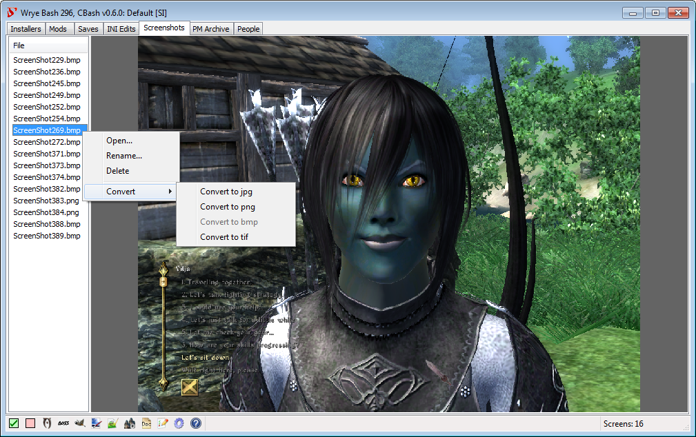
Wrye Bash's Screenshots tab.
Overview
The Screenshots tab allows you to preview any screenshots taken in-game using the built-in Print Screen functionality. These screenshots are saved as bitmap files (.bmp). Selecting a screenshot from the list on the left will display it on the right. Screenshots can be converted from bitmaps into a few other formats using context menu commands.
Context Menu Commands
Column Header Context Menu
Command
Description
Open
View the screenshot directory in Windows Explorer.
Next Shot
Set the name and number of the next screenshot.
JPEG Quality
Set the quality of JPEGs created during conversion.
Screenshot List Context Menu
Command
Description
Delete
Deletes the selected file(s).
Convert
Converts the selected files to one of the following formats: JPEG, PNG, BMP, TIFF. If a file of the conversion format already exists with the same name as a file to be converted, the conversion will not take place for that file.
Rename
Renames the selected file(s). If multiple files are selected, they will be numbered sequentially. If a file already exists with the same name as a file's resulting name, that file will not be renamed.
Advanced Launchers
Hiding Launchers
The Hide option in the right-click menu for launchers.
You can hide specific launcher icons, preventing them from being displayed, by right-clicking them and selecting Hide... or by inserting a semicolon before their path in the bash.ini.
For example, sPhotoshopPath=;C:\Program Files\Adobe\Photoshop 7.0\Photoshop.exe.
You can hide some of the toggle buttons using the bShowTes4... options in the Tool Options in the bash.ini.
You can unhide launchers hidden through the right-click option using the Settings menu. See the Settings Menu for more information.
Custom Launchers
Custom launcher buttons may be added by putting a shortcut to the application you wish to have a launcher for in the Mopy\Apps directory. Wrye Bash will then use the following information from the shortcut:
Icon
Working directory
Command line arguments
Comments
If you want to have a custom icon for a launcher, place a PNG image with the same name as the shortcut, appending the icon size, in the same folder. For example:
Notepadpp.lnk
Notepadpp24.png
Note: 24x24 icons taken from shortcuts do not work well, so if you are using this size, be sure to include a custom icon. Icon size displayed can be adjusted in the bash.ini or the Settings menu.
PM Archive Tab
Wrye Bash's PM Archive tab.
Overview
The PM Archive tab can be used to archive, view and search Private Messages from the official Bethesda Softworks forums. Due to forum updates, messages archived since the 13th of March 2010 cannot be imported into Wrye Bash. As such, the tab is only available for legacy support of those with messages archived before then.
Warning: This feature is both experimental and outdated. Keep a separate backup of any archives you import into Wrye Bash.
To import PM archives into Wrye Bash, follow the instructions below:
Archive your PMs using the forum option, then download the HTML archive that is emailed as an attachment to you.
Rename the archive file so that the filename begins with the date the archive was created, in the format YY.MM.DD. Eg. 07.11.06 archive.html. It doesn't matter what the name is after the date.
In Wrye Bash's PM Archives tab, right-click the box at the top and select Import Archives... then select the archive files you wish to import.
PMs may be searched using the bar at the bottom of the window, by entering in the search text then clicking the Search button or hitting return on your keyboard. Messages may be sorted by any of the columns by clicking a column header. Selecting multiple messages will display them all at once in the order they are listed.
Buttons & Context Menu Commands
Button
Description
Search
Search for the text entered into the search text box. Messages will be searched in the subject, author and text fields, and a filtered list of matching results will be displayed at the top of the window. Search may also be initiated by pressing the return keyboard key.
Clear
Clears the search box, removing the filter from the PM list and so displaying all archived PMs again. Search may also be cleared by emptying the search text box and pressing the return keyboard key.
PM List Context Menu
Command
Description
Delete
Deleted the selected message(s).
Import Archives...
Import one or more PM archive files.
People Tab
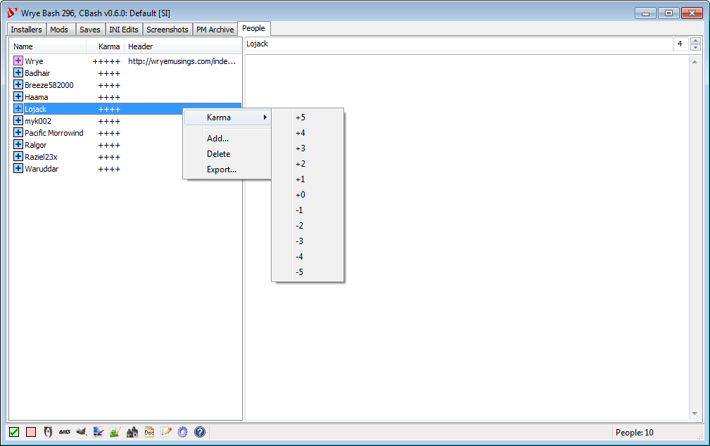
Wrye Bash's People tab.
Overview
The People tab functions as a simple database that can be used to keep notes on various people (eg. why you blocked a forum user, or what a good mod someone made).
People are listed in the column on the left, and the large text box on the right can be used for writing notes on the selected person. Notes are saved automatically as you type them, but otherwise the text box behaves as a simple text editor such as Notepad.
The Karma column displays the karma level you have set for them. Karma is a simple way of rating your disposition towards a person. The Header column displays the first 75 characters of text in a person's notes. Clicking a column header will sort by that column.
What Symbols & Colours Mean
Checkbox Colours
Checkbox
Meaning
Person has +5 karma.
Person has +3 or +4 karma.
Person has +1 or +2 karma.
Person has 0 karma.
Person has -1 or -2 karma.
Person has -3 or -4 karma.
Person has -5 karma.
Context Menu Commands
Column Header & Person Context Menus
Command
Description
Add...
Add a new person record to the list.
Delete
Delete a person record from the list.
Import...
Import a person record from an exported person record file.
Export...
Export a person record to a person record file. Exported person records are text files that contain the person's name and any notes you have on them. It doesn't export karma.
Columns
This submenu allows you to choose which columns are visible.
Karma
This submenu allows you to set a karma level for a person, ranging from +5 to -5.
The Settings menu is where Wrye Bash's global settings may be accessed. The Settings menu can be opened by clicking on the Settings button in the status bar. The Settings menu's items are detailed in the table below.
Settings Menu
Item
Description
Backup Settings...
Backs up all the parts of Wrye Bash that can be changed by the user to a location of the user's choosing. The backed up items are:
The bash.ini
The Wrye Bash specific documents in Data\Docs
The Mods, Installer, and Converter meta-data stored in [Game] Mods.
Any user profiles you have created.
Your application and UI settings.
Your messages from the PM Archive tab.
Your people from the People tab.
Any translation files you have.
All files in the Data\Bashed Patches directory.
All INI Tweaks.
(Optionally) image files, with a choice between all images, only changed or custom images or no images.
Restore Settings...
Restores your settings from a backup of your choice. This will force a restart of Wrye Bash to ensure the new settings take effect.
Save Settings
Normally, Wrye Bash saves its settings to disc only on closing. Use this to force a save right now.
Export list of allowed/disallowed OBSE plugin dlls
This will save the Good/Bad OBSE dll definitions to a text file, either for editing or for backup purposes.
Import list of allowed/disallowed OBSE plugin dlls
Brings up the Colors dialog. This dialog can be used to change the colors that Wrye Bash uses to communicate various bits of information.
The drop-down list is used to select the item for which you want to change the color. The square box next to the drop-down list opens a color picker, allowing you to choose a new color. The function of the other buttons is described in the table below.
Tabs
This submenu allows you to choose which of the main tabs are displayed (eg. Installers, Mods, Saves, INI Edits, Screenshots, People, PM Archives) by checking and unchecking the tabs listed in it.
Status Bar
Icon Size
Choose between 16x16, 24x24, or 32x32 Status Bar icons.
Unhide Buttons
Unhide Status Bar buttons that you have hidden.
Show App Version
Shows the versions of applications in their launchers' tooltips.
Language
This submenu lists the languages for which translations of Wrye Bash exist.
Plugin Encoding
This submenu allows you to select the encoding that Wrye Bash assumes plugin descriptions to be written in. The Automatic option is selected, Wrye Bash attempts to detect the encoding from the contents of the description. If a plugin description is being displayed incorrectly, try selecting another encoding from this list.
Game
This submenu lists the games that Wrye Bash supports and detects as being installed. Selecting a game will close Wrye Bash and re-open it for the selected game.
Use Alternate Wrye Bash Name
If checked, displays in the title bar Wrye Bash when running for Oblivion and Wrye Smash when running for Skyrim. If unchecked, the title bar will contain Wrye Bash for [Game] instead.
Debug Mode
Opens up a window to which debugging information is written.
Dump Translator
Generates a new translation file for your locale. See Internationalisation for more information.
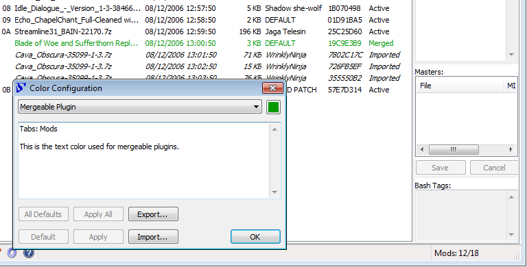
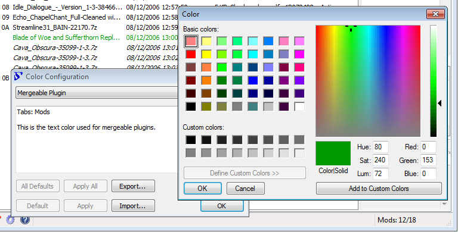
The Colors dialog accessible through Wrye Bash's Settings menu.
Colors Dialog Buttons
Button
Function
All Defaults
Returns all colors to their default setting. Apply All must still be used for the changes to take effect.
Default
Returns the current item to its default color. Apply must still be used for the change to take effect.
Apply All
Applies all changes you have made to the colors since last opening the Colors dialog.
Apply
Applies any change to the current item's color.
Export...
Exports the current color scheme to a text file.
Import...
Imports a color scheme from a text file previously exported. Apply All must still be used for the changes to take effect.
OK
Closes the dialog. Does not apply any changes made.
Doc Browser
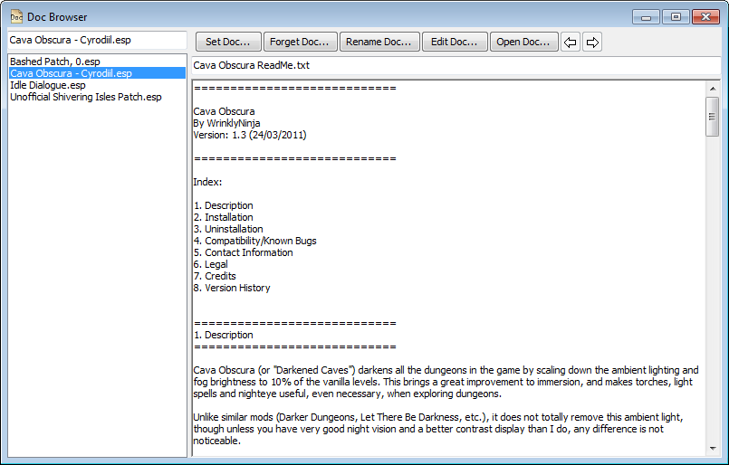
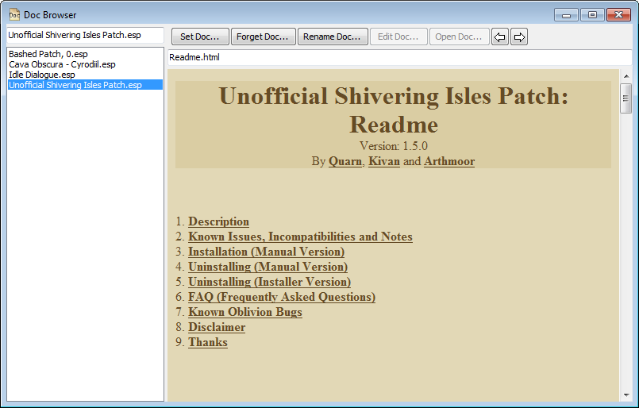
Wrye Bash's Doc Browser.
The Doc Browser allows you to quickly and easily scan through your mods' documentation. The supported document types are: text files, HTML files and MHT files (HTML archives). To display the Doc Browser, double click any plugin in the main list of the Mods tab.
When you double-click a plugin, Wrye Bash will open the Doc Browser and attempt to determine which document to associate with it. If it can determine one, it will display it. Otherwise, a blank page will be displayed. To associate a document with a plugin, use the Set Doc... button in the Doc Browser. To disassociate a document with a plugin, use the Forget Doc... button in the Doc Browser.
You can also rename an associated document using the Rename Doc... button to select a new name and/or location. The document will be renamed and/or moved to this location.
You can edit a document by clicking the Edit Doc... button. The document can then be edited in the viewing window. To finish editing, click the Edit Doc... button again. Changes are automatically saved when you select a new plugin, close the Doc Browser or finish editing.
A document can be opened in its default external editor by clicking the Open Doc... button.
A new document can be created for a plugin by clicking the Set Doc... button and choosing a new filename. This creates a document using a blank template that you can then edit. The default template is Data\Docs\My Readme Template if it exists, or if not, Data\Docs\Bash Readme Template.txt. The latter is written in Wrye wiki text format, which will be displayed as HTML when the Doc Browser is not in edit mode.
To view a different document, select a different plugin in the list on the left of the Doc Browser or in the Mods tab.
Some notes on Doc Browser behaviour:
If a plugin is renamed in the Mods tab, then any documents associated with it will become associated to the plugin's new name.
If a plugin is copied in the Mods tab, then any documents associated with it will also become associated with the copy.
Documents can be stored in any location, though Data\Docs is the standard location.
If you delete a plugin, its documentation will not be deleted, but it will no longer be viewable through the Doc Browser.
If you hide a plugin, its documentation will still be viewable through the Doc Browser.
Mod Checker
Wrye Bash's Mod Checker
The Mod Checker checks your active and merged plugins for errors, and provides warnings for any found, as well as configuration recaps and suggestions. It can be opened by clicking the Mod Checker button in the status bar.
At the top of the report is the Active Mod Files section, which lists your load order. It also displays any warnings that are applicable beneath the plugin(s) that they are applicable to. These warnings are either regarding missing masters or delinquent masters.
Missing masters occur when a plugin that an active plugin depends on is not active. This results in an immediate CTD when the game is launched.
Delinquent masters occur when a plugin's master loads after the plugin itself. This should be fixed to prevent issues in-game.
The next section of the report details the output of any rulesets installed. These are text files that contain a set of instructions that tell the Mod Checker what to look for and what to say in the report if anything is found. Currently the only ruleset distributed by Wrye Bash is for Cobl. Rulesets are stored in Data\Bash Patches and end in Rules.txt. Information on ruleset syntax can be found at UESP: Wrye Bash Mod Checker.
The rest of the report details any plugin groups that have been set up. Each group's section contains the following information:
Notes: These are various notes on the plugin group, as entered by the user.
Configuration: This is a summary of the plugin group's configuration. It uses a few symbols to denote the status of plugins, these are: x: active; +: merged; *: imported; -: inactive/unmerged.
Suggestions: Specific suggestions for the plugin group. These are typically activating or deactivating certain plugins, or replacing mods with other mods.
Warnings: Like suggestions, but the causes are more likely to cause issues. This section will detail what should be activated or deactivated to resolve the problems.
Mod Checker Buttons
Button
Function
Forward/Back Arrows
The Mod Checker report may contain links to other pages. These two buttons allow navigation between pages viewed, similar to the forward/back buttons in a web browser.
Mod List
Toggles the display of the Active Mod Files list.
Rule Sets
Toggles the display of the headers for the rulesets installed, even if they produce no other output.
Notes
Toggles the display of plugin group notes.
Configuration
Toggles the display of plugin groups' configurations.
Suggestions
Toggles display of the suggestions produced by plugin groups.
Version Numbers
Toggles display of version numbers where found for the plugins in the Active Mod Files list.
CRCs
Toggles display of the CRCs for the plugins in the Active Mod Files list.
Scan for Dirty Edits
Toggles the scanning of plugins for dirty edits. Effectively runs Scan for Dirty Edits on each of the plugins in the Active Mod Files list and displays the results in the Mod Checker's report.
Copy Text
Copies the text of the report to the clipboard. Useful for posting on forums.
Update
Forces a refresh of the report.
Oblivion.esm Swapping
Oblivion.esm swapping is a feature that allows mod authors to switch between different versions of Oblivion.esm on the fly. This is useful as it allows mod authors to make plugins that are totally SI-independent (as the Shivering Isles patches Oblivion.esm instead of using a new plugin). It can also be used to avoid the need for a fully patched Oblivion to run a plugin, but this usage is not recommended. If you want a plugin to work on older versions of Oblivion, use the Version 0.8 command on it.
The main requirement for swapping to work is that you have the necessary copies of the different Oblivion.esm files. This is only possible if you copy and rename Oblivion.esm before installing Shivering Isles. There are three accepted versions of Oblivion.esm in addition to the latest SI one. These are determined by their file size:
247388848 bytes: this is the 1.1 version. Rename it to Oblivion_1.1.esm.
247388812 bytes: this is the GOTY version without SI. Rename it to Oblivion_GOTY non-SI.esm.
247388894 bytes: this is an uncommon variant of the 1.1 version. Rename it to Oblivion_1.1b.esm.
You can then swap between the different versions of Oblivion.esm using the Oblivion.esm submenu in the Mods tab column header context menu. Your currently active version will be checked, select another to swap them. You can also perform the same swapping in the Saves tab column header context menu, but in addition to the swapping this will also mark the selected version as the preferred version to use with the current Save Profile. If you then switch to another save profile and back to this one, Oblivion.esm will be swapped automatically.
Wrye Bash displays the current version of Oblivion.esm in its version indicators. The main indicator is in the title bar of the main Wrye Bash window, but there are also indicators placed after Oblivion.esm in the Mods tab plugin list, and after Oblivion.esm in the Masters tab for plugins and savegames. The three possible indicators are:
[1.1]: You are currently using the 1.1 or 1.1b version of Oblivion.esm.
[GOTY non-SI]: You are currently using the GOTY without SI installed version of Oblivion.esm.
[SI]: You are currently using the Shivering Isles-patched version of Oblivion.esm.
Keyboard Shortcuts
The following keyboard shortcuts work almost everywhere in Wrye Bash.
Shortcut
Function
ctrl-numpad plus (+)
Auto-sizes the columns to fit what is displayable.
ctrl-a
Selects all.
shift-ctrl-a
Deselects all.
Command Line Arguments
The following table lists all command-line arguments Wrye Bash
understands.
Argument
Function
-g GAMENAME, --game=GAMENAME
Bash reads the windows registry to find supported games and
checks the -o argument, the sOblivionPath ini option
and the position of the Mopy folder (namely checks if Mopy's parent
folder contains a supported game exe). If via any of the last three
methods a path to a supported game is found then this game will be
used, even if -g is not set. But in case those options
are not set or a supported game exe (NB: only exe name is checked)
is not found using them, Bash will prompt you to choose amongst the
games found in the registry (if any) except if -g is
set. -g takes precedence on the heuristics above which
may lead to surprises.
-d, --debug
Useful if bash is crashing on startup or if you want to
print a lot of information (e.g. while developing or debugging).
-C, --Cbash-mode
enables CBash and uses CBash to build the bashed patch.
-P, --Python-mode
disables CBash and uses python code to build the bashed
patch.
-L LANGUAGE, --language=LANGUAGE
Specify the user language overriding the system language
settings.
Path Arguments
All path arguments must be absolute paths and use either
forward slashes (/) or two backward slashes (\\). All of these can
also be set in the ini (where you can also use relative paths) and
if set in both cmd line takes pecedence.
-o OBLIVIONPATH,
--oblivionPath=OBLIVIONPATH
Specifies the game directory (the one containing the game's
exe). Use this argument if Bash is located outside of the game
directory and you have no ini option (or want to override it).
Bash reads the windows registry to find supported games
so this is not needed if the game entry is present in the registry.
If however more than one game entries are present in the registry
consider providing the --game argument to specify
which one to use - otherwise Bash will prompt you.
User Directory Arguments
These arguments allow you to specify your user directories
in several wasy. These are only useful if the regular procedure for
geting the user directory fails. And even in that case, the user is
probably better off installing win32com.
-p PERSONALPATH,
--personalPath=PERSONALPATH
Specify the user's personal directory. (Like "C:\\Documents
and Settings\\Wrye\\My Documents") If you need to set this then you
probably need to set -l too.
-u USERPATH, --userPath=USERPATH
Specify the user profile path. May help if HOMEDRIVE and/or
HOMEPATH are missing from the user's environment.
Specify the user's local application data directory. If you
need to set this then you probably need to set -p too.
Backup and Restore Arguments
These arguments allow you to do backup and restore settings
operations.
-b, --backup
Backup all Bash settings to an archive file before the app
launches. Either specify the filepath with the -f/--filename
options or Wrye Bash will prompt the user for the backup file path.
-r, --restore
Backup all Bash settings to an archive file before the app
launches. Either specify the filepath with the -f/--filename
options or Wrye Bash will prompt the user for the backup file path.
-f FILENAME, --filename=FILENAME
The file to use with the -r or -b
options. Must end in '.7z' and be a valid path and for -r
exist and for -b not already exist.
-q, --quiet-quit
Close Bash after creating or restoring backup and do not
display any prompts or message dialogs.
-i, --include-changed-images
Include changed images from mopy/bash/images in the backup.
Include any image(s) from backup file in restore.
-I, --include-all-images
Include all images from mopy/bash/images in the
backup/restore (if present in backup file).
Internationalisation
Overview
Wrye Bash has built-in support for translation into other languages, using text files that tell it which English strings in the source code should be translated, and into what. These text files are found in Mopy\bash\l10n\. New translations or updates to existing translations should be presented to the Wrye Bash team so that they may be included in future releases.
To begin translating, or to update an existing translation, use the following steps.
Select Dump Translator from Wrye Bash's Settings menu. This generates a new version of the translation file for your locale. The new file will be named appropriately, except from the leading "NEW", and will contain any translations already done.
Delete any existing translation text file for the same language.
Rename the new translator file, removing the leading "NEW". Do not change the rest of the filename.
Edit the translator file, adding translations or editing existing translations.
To test a translator file, save your changes then restart Wrye Bash, and select the language from the Language submenu in Wrye Bash's Settings menu.
Translator File Format
Below is an excerpt from a translator file.
=== basher.py, 3711
Active profile cannot be removed.
>>>>
=== basher.py, 3717
Delete profile %s and the %d save files it contains?
>>>>
DELETE PROFILE %s AND THE %d SAVE FILES IT CONTAINS?
The above contains two separate translation entries. Each entry begins with the source code file and line number the string to be translated is found on.
The file line is followed by the original text string on a new line, which is then followed by a line containing only >>>>. The translation entry ends with a final line containing the translated text string.
Note: It is important that the formatting characters are not removed or moved or added to. Formatting characters are those that start with a percentage sign or a backslash, eg. %s %d %08X \n. If a formatting character is missing, Wrye Bash will throw an exception, which is bad.


 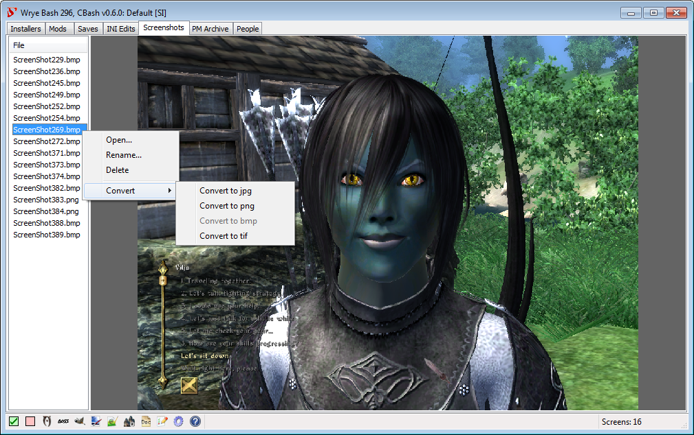
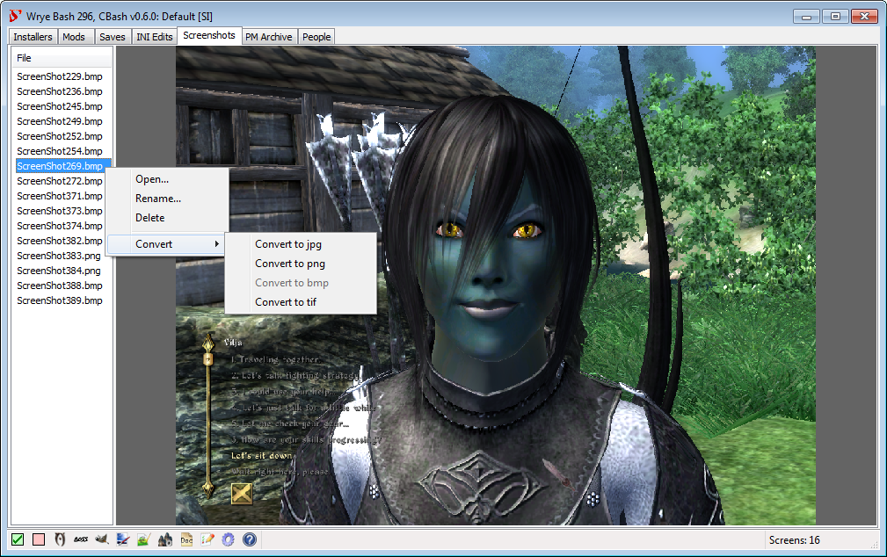


 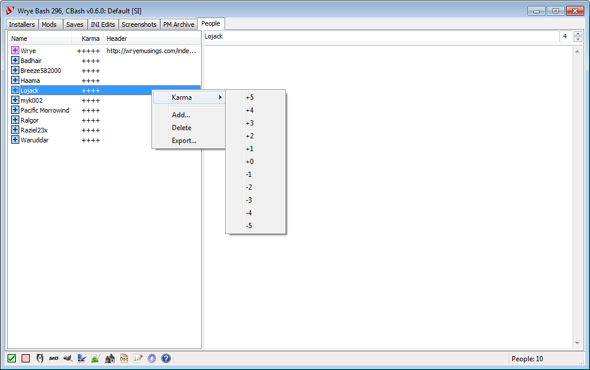
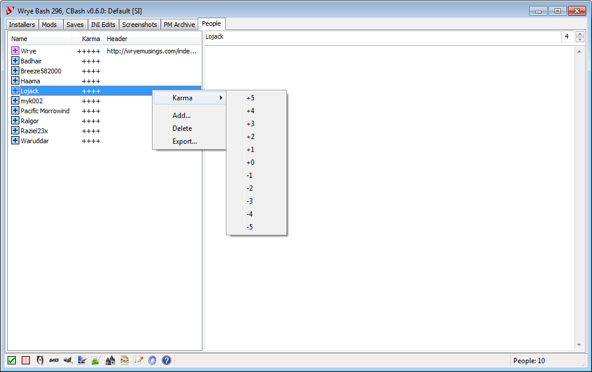